|
Archives Actus Gambier
|
||||||||||||||||||||
|
9 décembre 2009 - Fin des actus aux Gambier Notre tournée d'adieu triomphale se termine. Partout, nous avons été accueillis comme des princes et le bateau s'est lentement chargé des denrées les plus variées. Décidémment, les Polynésiens ont le sens de l'hospitalité.
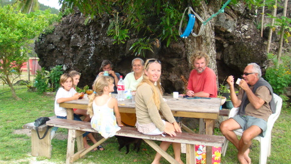 Le café d'adieu chez Denise et Edouard. Avant de mettre les voiles et de quitter l'archipel, nous avons aussi pu profiter une dernière fois d'un puissant vent de Sud-Est qui a levé une mer assez forte dans le petit lagon des Gambier. Cela ne nous a pas empêché de saluer nos nouveaux amis et de promettre que nous reviendrons, dès que l'occasion se présenterait, ce qui, mathématiquement, est hautement improbable en ce qui concerne Cécile et moi, et un peu moins en ce qui concerne les enfants. Néanmoins, il se pourrait qu'un vent du large nous ramène en ces lieux sympathiques.
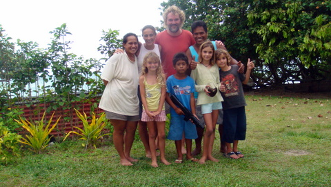 Photo d'adieu chez Hervé et Valérie. Nous sommes maintenant prêts pour le départ: nous avons des bananes, des tomates, des papayes, des cocos, des pomelos, des citrons, des légumes variés et, comble du luxe, de l'eau et du gasoil en suffisance. La météo s'annonce bonne pour les 3 prochains jours. En conséquence, si tout va bien, nous partirons dès demain, le 10 décembre, pour 6 jours de mer avant d'aborder Fatu Hiva aux Marquises. Nous reprendrons contact avec le site vers le 20 décembre, quand nous serons du côté de Hiva Oa. A bientôt !
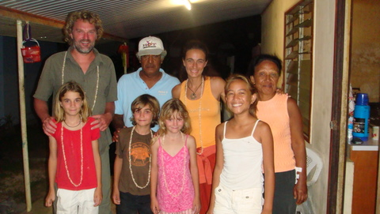 Au revoir Tepano et Hélène. |
||||||||||||||||||||
|
29 novembre 2009 - Gambier, dernier barbecue à Akamaru Aujourd'hui, nous avons entamé notre tournée d'adieu aux Gambier. Notre première destination fut Akamaru, qui fut également la première île que nous visitâmes, il y a près de 4 mois.
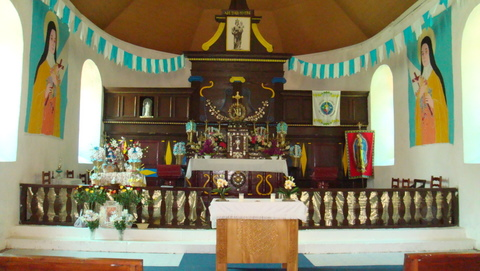 Cécile a décidé d'assister à la messe dominicale en ce 29 novembre. Depuis, les choses n'ont guère changé, à part pour Cécile qui a trouvé ici une spiritualité qui lui manquait en Belgique. Ce matin, elle a donc enfilé son zondag costume avant d'aller écouter le diacre en l'église d'Akamaru (Désolé Roger, je n'ai pas plus d'autorité aujourd'hui sur ma femme que toi, jadis, sur ta fille). Mais, il faut dire que les messes mangaréviennes sont assez mélodieuses et colorées.
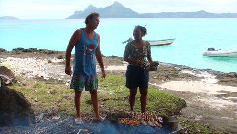 Et hop!, encore un barbeuc à la plage. Après ces formalités, nous sommes allés sur la petite plage du nord de Mekiro pour célébrer notre départ prochain. Nous y étions en compagnie de Bertrand et Lucy et, pendant que nous échangions des propos insipides sur l'intolérance des catholiques envers les témoins de Jeovah, les enfants barbotaient dans l'eau dont la température devient franchement agréable. |
||||||||||||||||||||
|
25 novembre 2009 - Gambier, le temps passe Cela fait près de 8 mois que nous avons quitté notre mère patrie et je dois avouer qu'aujourd'hui, ce 25 novembre, il faisait 30°C aux Gambier. Je vous divulgue cette information non pas tant pour vous réchauffer le coeur, vous qui vivez dans ces contrées polaires où nulle vie n'égaie la banquise, que pour me réjouïr moi-même du bonheur et de la quiétude qui s'offre à moi. Vous l'aurez deviné: nous avons fait un barbecue sur une petite plage à l'extrême Est des Gambier et, ma foi, nous nous en sommes très bien sortis.
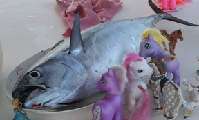 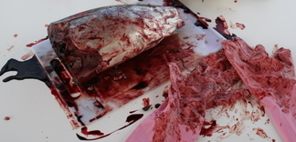 La bonite. Avant et après le travail de Cécile. Faut pas contrarier Cécile... Hier, en venant de Rikitea, nous avions ferré une bonite qui marinait depuis lors dans un jus de vin blanc agrémenté de gingembre, ail, vinaigre, oignons et jus de citrons. Aujourd'hui, le temps était ensoleillé et une petite brise venue du large nous rafraîchissait gentiment. Nous avons donc profité de l'absolue sollitude de notre mouillage pour nous offrir une journée oisive sur le sable blanc. Nous avons commencé par un peu de snorkeling pour nous ouvrir l'appétit. Ensuite, pendant que les enfants s'égayaient à la plage, Cécile et moi sommes rentrés sur le bateau pour préparer le BBQ. Vers midi, nous nous sommes tous retrouvés à la plage.
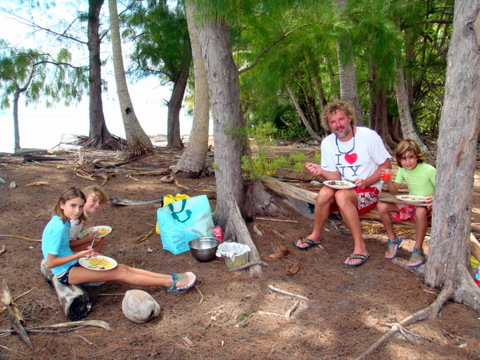 C'est sympa les barbeucs à la plage. Nous avons allumé un petit feu sur la plage, et fait cuire les filets de bonite marinés que nous avons garnis de salade de concombre et de macaroni au curry et coeur de cocotiers. Un régal. Après le repas, pendant que les enfants se défoulaient dans l'eau pour faciliter la digestion, Cécile et moi devisions sous les pins. Un rien nostalgiques, nous nous rappelions comment hier, pendant la navigation, un requin marteau avait voulu se saisir de notre bonite sans défense, alors que nous la ramenions à bord et qu'elle se démenait au bout du fil de pêche. Ces requins sont vraiment sans gêne et il fallut toute la vivacité de Cécile pour éviter qu'il ne mange notre futur repas. Décidément, les eaux du lagon sont peuplées de créatures étranges. La semaine passée, c'est une raie manta que nous avons croisée au large de Mangareva. Pour ceux qui n'en ont jamais vu, les raies manta mesurent près de 3m d'envergure et 'volent' majestueusement à la surface de l'eau. C'est vraiment stupéfiant. |
||||||||||||||||||||
|
20 novembre 2009 - Gambier, le secret de l'espadon Il y a les pêcheurs du lagon et les pêcheurs du large. Ces derniers sont parfois chanceux, comme en témoigne leur prise d'aujourd'hui.
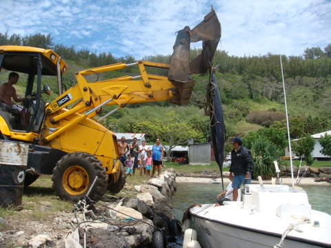 Un espadon peut peser jusqu'à 1000 kg. Celui-ci en faisait environ 200... Dès que nous avons vu passer la barque ramenant l'espadon, les enfants ont interrompu la classe et nous nous sommes précipités pour assister au débarquement du monstre, réalisé avec cet engin élévateur.
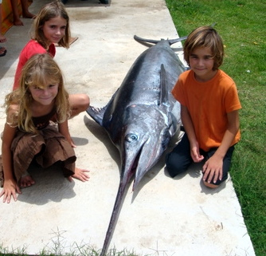 Les enfants étaient un peu impressionnés. Un peu plus tard, la bête gisait sur le béton et les enfants n'en revenaient pas: ils n'avaient jamais vu un aussi gros poisson en vrai. En plus, ils ont pu jouer avec sa nageoire dorsale, laquelle se replie et se déplie assez majestueusement. Nous avons ensuite regardé les gens écorcher le poisson et détailler ses filets en tronçons. Nous sommes repartis avec 4 kg d'espadon, que nous consommerons en carpaccio et en grillade.
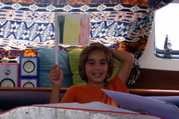 Sidney a fini son année scolaire. Après cette petite excursion, il était temps de rentrer en classe où Sidney a magistralement terminé son année (enfin, il lui reste encore quelques révisions mais la matière a été vue !). |
||||||||||||||||||||
|
19 novembre 2009 - Gambier, fait môvé Depuis hier 16h, il pleut sur les Gambier. Le ciel est plombé et, n'étaient les 23°C qui règnent à bord, on se croirait en Belgique. Pour me faire pardonner d'avoir publié tant de photos de plages de sable fin, de ciels bleus et de cocotiers, voici celle que j'ai prise ce matin, du cockpit de Let It Be.
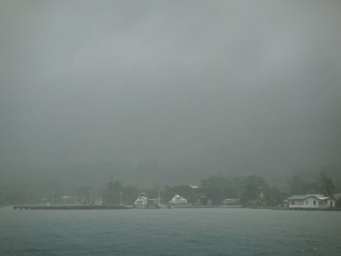 Vue de Rikitea, dans la pluie et le brouillard. Mais tout n'est pas noir. J'ai mesuré le niveau d'eau hier soir: 540L. J'ai remesuré ce midi: 800L. On a donc refait le plein d'eau de pluie et on en a même profité pour refaire l'eau potable puisque c'est la récupération directe d'eau de pluie (sans passer par le réservoir) qui alimente nos bouteilles (capacité de stockage d'environ 100L d'eau pure). Maintenant que nos pleins sont faits, la pluie est devenue inutile, voire gênante. J'ai donc téléphoné à Dieu pour qu'il arrête mais il m'a dit qu'il s'en occuperait plus tard. Dieu m'a parlé d'un petit pays en Europe, dont le nom commence par BEL et finit par GIQUE, pour lequel il finalise un programme météo pourri pour cette fin d'année. Mais "Rassure-toi.", m'a-t-il dit, "Ils sont habitués, c'est juste pour rigoler." Dieu est un petit farceur espiègle. |
||||||||||||||||||||
|
14 novembre 2009 - Un samedi aux Gambier Vers 5h, ce matin, nous avons été réveillés par un grand bang. En moins de 10 secondes, nous étions sur le pont, à peine éclairé par l'aube naissante. Nous avons immédiatement remarqué que la mer était d'huile et qu'aucun bateau ne frayait à proximité du nôtre. Malgré un examen minutieux du bateau, nous n'avons pas pu établir l'origine du bruit. Les seules choses que nous avons découvertes, ce sont quelques écailles et un peu de sang sur l'étrave du flotteur bâbord. Nous nous sommes dès lors perdus en conjectures, en imaginant les scenarii les plus délirants: on nous canardait de la plage avec des noix de coco, une barque nous avait heurté et s'en était fuie, un OVNI nous avait percuté, bref du grand n'importe quoi. Bien que nous n'en soyons pas sûrs, il semble que nous ayons en fait été torpillés par une carangue poursuivant un poisson volant à grande vitesse. J'en vois déjà qui rigolent mais cette explication provient d'un pêcheur du coin qui nous a confirmé avoir vécu ce genre de mésaventure à plusieurs reprises à bord de sa barque. Il faut quand même préciser qu'une carangue peut atteindre 2m de long et peser plus de 50 kg. Après ce début de journée mouvementé, je me suis mis au travail dans les cales. En effet, le moment était venu pour la vidange d'huile des moteurs ainsi que le remplacement des filtres à huile. Cette activité qui ne prend pas plus de quelques minutes sur une voiture, s'est quand même avérée un peu plus compliquée que prévu puisque d'une part la pompe à dépression que j'utilise pour extraire l'huile usagée n'avait pas le bon calibre, ce qui m'a forcé à bricoler un embout, mais en plus le filtre bâbord était sacrément bien vissé. Pour ceux qui s'étonnent, sachez que je n'ai pas accès 'sous' le moteur, ce qui m'empêche de vidanger par gravitation... Cécile, pour sa part, a poursuivi l'enseignement des enfants, en expliquant pour la 248ème fois à Kenya la différence entre le passé composé et l'imparfait, tout en suivant les progrès en écriture de Syr Daria et ceux de Sidney en conjugaison au présent. Après le repas, Cécile avait rendez-vous chez Rukia pour une après-midi consacrée à la cuisine et aux coutumes locales. C'est la troisième fois qu'elle rend ainsi visite à Rukia pour s'initier à la cuisine locale. Chaque fois, elle en revient enchantée, les bras chargés des mets les plus divers. L'accueil des Polynésiens est toujours sympathique, l'ambiance est bonenfant et, chez Rukia, la cuisine est le ventre de la maison. On y croise non seulement les vahinés qui cuisinent pratiquement toute la journée mais également les pères, fils, neveux, cousins, grands-pères qui mangent à toute heure de la journée. Visiblement, cuisiner et manger constituent des passe-temps très prisés en Polynésie (d'ailleurs, le mythe des vahinés fines et élancées qui se jettent à moitié nues sur les voyageurs de passage a pris un sérieux coup de vieux dans mon esprit). Bref, Cécile a emmené les enfants chez Rukia et a passé l'après-midi à fabriquer des nems polynésiens, de la sauce au gingembre, des beignets à la banane, du poé à la banane (c'est une espèce de pudding), etc. J'en suis d'autant plus satisfait que tous ces plats venus d'un autre monde me permettent de ne pas avoir à cuisiner moi-même... En plus, c'est à la fois un régal et une divine surprise. Elle a même pu observer la fabrication de l'huile de monoï. En vrai. Je n'ai pas bien compris toutes les étapes requises pour obtenir le fameux élixir que mettent les Polynésiennes dans leur cheveux mais je sais maintenant qu'on le fabrique à partir de noix de coco et de petits crabes et que ça prend 3 à 4 jours. |
||||||||||||||||||||
|
13 novembre 2009 - Gambier, le bilan de 3 mois de présence Nous sommes arrivés aux Gambier le 12 août 2009. Il y a donc 3 mois. Au moment où nous préparons le départ vers les Marquises, l'heure du bilan est arrivée. Premièrement, après 3 mois, nous avons enfin réussi à trouver des tomates, des concombres et même des poireaux. A l'heure où j'écris ces lignes, nous avons des poivrons, des courgettes, des radis et de l'aneth dans le frigo. C'est dire si on a fini par trouver quelques bons plans. A ce sujet, il est intéressant de constater que la plupart des légumes non 'locaux' (comme les courgettes, l'aneth ou les radis) nous sont fournis par Edouard et Denise, lesquels reçoivent des graines des voiliers. Ils les plantent et, comme ici tout pousse, ils récoltent quelques semaines plus tard. Et comme les Polynésiens ne sont pas très intrépides en matière de gastronomie, ces légumes 'exotiques' ne se vendent pas et finissent dans l'assiette des navigateurs de passage. Nous avons également suffisamment de contacts pour avoir en permanence des bananes et des citrons à bord (car curieusement, ces fruits ne se vendent pas: il y en a partout mais il faut être 'connecté' pour en disposer). Deuxièmement, nous avons découvert des tas de trucs mangeables alors même que l'on se préparait à jeuner: des coeurs de cocotiers, des 7 doigts, des cigales, des burgots, du thasard, sans parler des plats cuisinés comme le délicieux poisson à la tahitienne. Bref, au niveau culinaire, on peut dire que nos habitudes ont été un peu taquinées. Troisièmement, en dépit des conditions peu favorables, Cécile a maintenu le cap scolaire. Les enfants ont beaucoup profité de ses cours. Il reste 2 semaines de cours pour Kenya, 5 semaines pour Sidney et 8 semaines pour Syr Daria. Ensuite, leur année scolaire sera achevée et ils pourront entamer l'année suivante. Pour ceux qui se questionnent, l'école à distance ne suit pas le rythme scolaire standard (donc pas de septembre à juin). En plus, la 'durée' d'une année dépend de la matière et de l'année. Ainsi, Syr Daria, en 1ère, doit effectuer 35 semaines de français tandis que Kenya n'a que 25 semaines de maths en quatrième (dont le niveau n'est évidemment pas le même que celui de la 1ère année). Quatrièmement, j'ai pu mettre ces 3 mois à profit pour peaufiner ma maîtrise de la fabrication d'hydromel des îles. Grâce à mes nombreux essais et malgré quelques déchets (il faut quand même reconnaître que certains de mes breuvages tenaient plus de l'huile de vidange que du vin), je suis arrivé à réaliser une boisson rafraîchissante, légèrement alcoolisée et assez fruitée, qui remplace avantageusement jus de raisins fermenté local, carrément imbuvable et surévalué, selon moi. Il y a maintenant en permanence 10 à 15L de mélange qui fermentent dans les cales et dont je contrôle l'évolution jour après jour, avant de filtrer, refroidir et me délecter. Côté négatif, il faut reconnaître que les Gambier, c'est sympa mais c'est un peu petit. On croise souvent les mêmes personnes et les sujets de conversation ne sont pas très variés. Aussi sommes-nous satisfaits de poursuivre notre voyage. A partir de maintenant, nous allons entamer notre tournée d'adieu et, dès que nous aurons récupéré la suite des cours des enfants (dans le prochain colis), nous partirons vers les Marquises. N'empêche, on aura un petit pincement au coeur en quittant ce petit coin de paradis, ses eaux si claires et sa végétation surprenante de vigueur. Et je suis sûr que ce premier contact avec les Polynésiens marquera nos coeurs à tout jamais. |
||||||||||||||||||||
|
9 novembre 2009 - Gambier, la mangue ne tombe jamais loin du manguier Voici encore un proverbe Polynésien qui ne trouve pas de traduction littérale en français. En gros, ça veut dire que si vous trouvez une mangue par terre, il est probable que vous soyez près d'un manguier. Cécile prend très à coeur son emploi à temps plein d'institutrice de première, deuxième et quatrième primaire. Mais cela ne lui suffit pas. Il lui en faut toujours plus. Elle a donc profité de la présence de Christelle et Tutana, venues chez leur père Bertrand durant ces vacances de Toussaint, pour les inviter en classe. Bien qu'agées de 11 et 13 ans, les deux jeunes filles se sont gracieusement pliées à cette lubie et ont très doctement suivi les cours magistraux dispensés par Cécile.
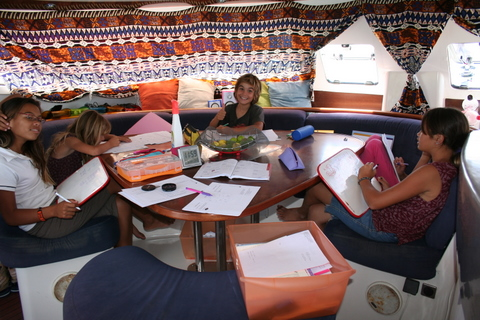 Cécile a trouvé deux nouvelles recrues pour sa classe La matinée fut studieuse à bord du Let It Be, même si la présence de toutes ces filles (et en particulier de Tutana) autour de lui a quelque peu perturbé Sidney. Mais il lui faut dès à présent assumer son rôle de séducteur auprès de la gent féminine, comme le fut son père avant lui, et ses grands-pères, et les pères de ceux-ci. Après tant de concentration et de dur labeur, le repas fut rapidement envoyé et les conditions étaient propices à une activité très en vogue aux Gambier: l'édification de chateaux de sable à la plage. Nous avons lâchement profité de la présence des deux ados pour abandonner tout ce beau monde sur une plage et jouir d'une tranquilité sereine sur le bateau.
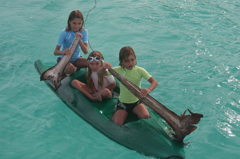 Les enfants font preuve d'ingéniosité Mais c'était sans compter sur la débrouillardise de notre progéniture qui, trouvant le temps long, nous est revenue en utilisant la planche et des branches de cocotier en guise de rames... |
||||||||||||||||||||
|
2 novembre 2009 - Gambier, Aukena Eh oui, après Mangareva, Akamaru, Taravaï et Totégegie, il nous restait une des grandes îles de l'archipel à visiter: Aukena. C'est chose faite, et bien faite. Hier, fidèle à mes nouvelles habitudes, j'étais parti à la pêche aux Umés. Aujourd'hui, c'était le tour des Putaras, aussi appelés 7 doigts, coquillages assez grands qui gisent sur les fonds coraliens et qui constituent un met délicat, coupés en tranches et mangés crus avec une petite goutte de citron. Bref, vers 11h ce matin, nous avions tout ce qu'il fallait pour un petit barbecue sur la plage. Restait à trouver l'endroit idéal: une petite langue de sable blanc à proximité du bateau semblait nous inviter. Nous nous y sommes donnés rendez-vous avec Sabine et Gary pour une ripaille dominicale.
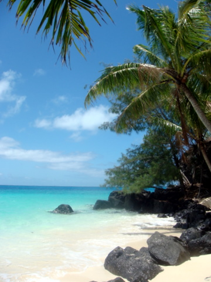 Le lieu des festivités Arrivés sur place, nous nous sommes mis à pied d'oeuvre, afin de pouvoir manger dans les meilleurs délais. C'est qu'on ne plaisante pas avec la nourriture ici. Gary a cassé les coquillages afin de récupérer leur chair tandis que j'allumais le barbecue et, comme il nous manquait une grille métallique, Gary est allé couper des feuilles de cocotiers, dont il a extrait la nervure. C'est cette partie de la plante qui nous a servi de support pour cuire les poissons.
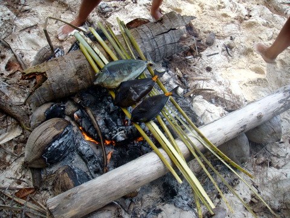 Les Umés cuisent sur les branches de cocotiers Nous avons mangé les 7 doigts en entrée, suivis des poissons. Un délice. Après le repas, nous avons échangé des propos insipides en regardant les enfants jouer dans les vagues. Encore un lundi stressant à Aukena...
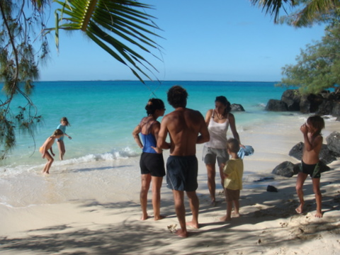 La plage devant le BBQ |
||||||||||||||||||||
|
31 octobre 2009 - Gambier, Air Tahiti Suite au bris malencontreux de notre hélice de dinghy, nous avions recherché le dealer officiel Tohatsu (c'est la marque du moteur d'annexe) à Papeete. Nous l'avions contacté et avions pu passer commande d'une hélice de remplacement. Par chance, nous connaissions quelqu'un de passage à Tahiti qui a pu payer pour nous sur place. Grâce à cela, notre nouvelle hélice fut envoyée par le fret Air Tahiti et arrivait ce samedi à Rikitea. Nous sommes allés la chercher et avons découvert la photo suivante au mur.
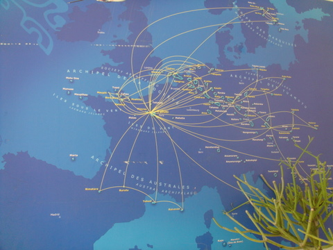 La Polynésie, superposée à l'Europe Si la capitale de la Polynésie était placée à Paris, les Gambier seraient en Bulgarie ! Et les Marquises en Suède. Les Tuamotus s'étenderaient de la Roumanie à la Hollande... |
||||||||||||||||||||
|
30 octobre 2009 - Gambier, Halloween Unbelievable. Même ici, les américains sont parvenus à imposer cette fête dont les origines celtiques se perdent dans la forêt de Brocéliande. L'école primaire de Rikitea organisait un barbecue suivi d'une projection cinématographique pour célébrer dignement l'événement.
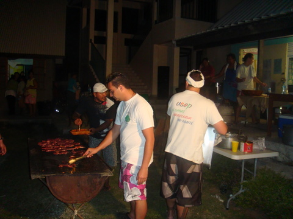 Les brochettes et steackettes cuisent sur les demies touques Nous nous sommes rendus à ces réjouissances avec grand plaisir, d'autant plus que c'était notre première sortie nocturne depuis notre arrivée aux Gambier. On en a profité pour faire un peu de socializing avant de nous jeter sur les délicieuses brochettes.
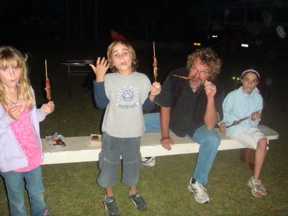 Quel plaisir Ensuite, nous sommes allés dans la salle de projection. On y donnait Madacascar II et Voyage au centre de la terre, dans une cacophonie telle qu'on entendait à peine les dialogues. Les enfants couraient dans tous les sens et hurlaient en jouant à cache-cache. Bref, une soirée familiale. |
||||||||||||||||||||
|
29 octobre 2009 - Gambier, la rédaction victime d'un attentat Depuis hier, le site n'est plus mis à jour, suite à un attentat perpétré sur la personne du rédac'chef. Communiqué de la rédaction Commentaire de Cécile |
||||||||||||||||||||
|
27 octobre 2009 - Gambier, pourquoi vous restez là ? Voici 3 mois que nous sommes aux Gambier et d'aucuns se demandent: "Mais pourquoi ne partent-ils pas ?". De fait, cette question taraude les esprits les plus subtils de notre siècle. Nous avons en effet déjà sillonné l'archipel dans tous les sens et l'océan Pacifique étant assez grand, au rythme où nous le visitons, nous serons morts depuis longtemps quand nous rentrerons.... Certes, les raisons de poursuivre notre aventure sont nombreuses mais il existe au moins deux bonnes raisons de rester encore quelques semaines aux Gambier. Premièrement, plus on reste, plus on découvre le microcosme Gambiérain. On tisse des liens sociaux et on s'attache aux gens que l'on apprend à connaître. Rien de très nouveau mais je suis sûr que beaucoup parmi vous ont regretté de ne pas pouvoir prendre le temps de connaître un petit coin de paradis, découvert au détour de vacances trop courtes, où il faut voir ci, il faut voir ça... Ici, on prend notre temps. Deuxièmement, la saison des cyclones s'étend de décembre à mars et couvre la région qui va de l'Australie aux îles de la Société (Bora bora, Moorea, Etcetera), voire aux Tuamotus. Nous avons décidé de rester hors de cette zone, afin d'être à l'abri et de ne pas prendre de risques inutiles. Donc, on doit rester à l'est du méridien 140°W jusqu'en avril. On a décidé de rester 4 mois aux Gambier puis 4 mois aux Marquises. Après, on continuera notre périple vers l'ouest... Troisièmement, la belle saison commence ici, la température augmente et bientôt, les mangues, les litchis et les avocats vont littéralement tomber des arbres dans nos assiettes. Alors, pourquoi partir ? |
||||||||||||||||||||
|
25 octobre 2009 - Gambier, y a plus d'hélice, hélas... La journée avait bien commencé. J'étais parti à la pêche aux Umés, glissant dans l'eau claire tel un requin, brandissant mon harpon comme le capitaine Achab, et empalant les poissons avec une facilité frisant le surnaturel. Cécile et les enfants, restés sur le bateau, avaient la visite de Valérie et de quelques garnements de l'île. Ils étaient venus avec des noix de cocos et une rape tahitienne. Cécile a pu s'initier au maniement de cet ustensile, un peu dangereux mais fort utile, surtout pour raper les noix de cocos.
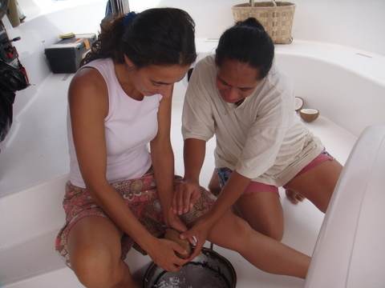 Cécile apprend à raper les noix de cocos, sous l'oeil bienveillant de Valérie Grâce aux efforts de Cécile, les noix furent vite remplies de copeaux de pulpe, à la grande satisfaction des enfants qui se sont régalés.
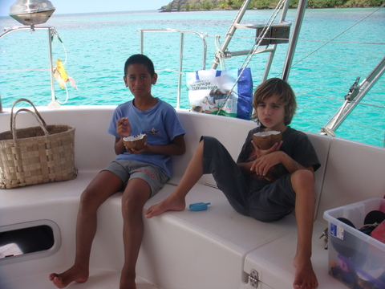 Sidney, très à l'aise pour manger sa noix. Intermède narratif. Nous recevons régulièrement des messages qui sous entendent que tout ne peut pas être aussi idyllique que nous le présentons. Que nous passons sous silence les moments de doute, d'ennui, voire de tension. Force est de constater qu'effectivement, j'ai décidé que nous vivions dans un compte de fées et qu'en conséquence, tout serait rose pendant toute notre vie et que nous aurions beaucoup d'enfants (ou, à défaut, on essaierait beaucoup d'en avoir). Fin de l'intermède narratif. Quelquefois, malgré nos rêves insensés, il arrive que la réalité soit sordide, que le destin soit injuste. Et, précisément, nous rentrions en dinghy par cette belle journée d'octobre. Nous serpentions entre les patates de corail, avec une prudence de Sioux et à la même vitesse qu'en revenant de Nieuwpoort un dimanche après-midi. Et pourtant, à la mi-parcours, nous entendîmes un POC, le dinghy eut un soubresaut, le moteur se tut et la pale chut.
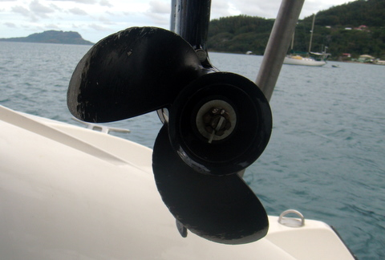 C'est là qu'est l'os... Voilà ce qui arrive quand on heurte le corail. Je me sens très De Funès/Bourvil en ce moment et comme disait ce dernier: "Elle va rouler beaucoup moins bien maintenant". Tout n'est pas rose aux Gambier... |
||||||||||||||||||||
|
24 octobre 2009 - Gambier, retour à Taravaï Après une longue réflexion et de nombreuses hésitations, nous avons décidé d'aller à Taravaï ce week end. Nous pouvions aller à Totégégie, à Akamaru, ou à TaravaÏ. On pouvait même aller jusau'à Aukena, où nous n'avions jamais mis les coques ou encore rester sur place, pour surprendre tous le monde. Quel dilemme ! En définitive, nous avons été dire bonjour à Dom et Dédé, habitants Taravaï et Poppas(blancs) de leur état. A peine arrivés, nous avons été mis à contribution pour l'entretien du jardin. Aujourd'hui, le travail consistait à 'élaguer' les bananiers et brûler les feuilles mortes.
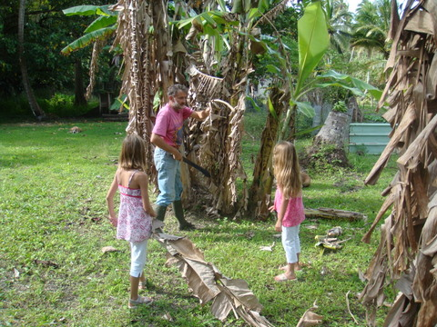 Kenya ramasse les feuilles de bananier mortes Après la visite chez Dédé, nous nous sommes rendus chez le voisin. En chemin nous avons découvert une plante extraordinaire, d'un genre inconnu.
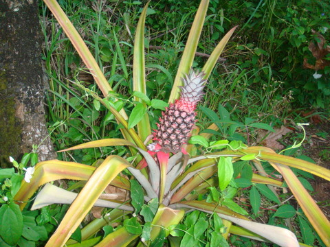 Un petit ananas, qui deviendra grand... Pour terminer la journée, pendant que nous visitions le jardin, les enfants ont chacun trouvé un chaton. Il nous a fallu toute la persuasion de Cécile pour éviter d'avoir quelques bouches de plus à nourrir à bord de Let It Be
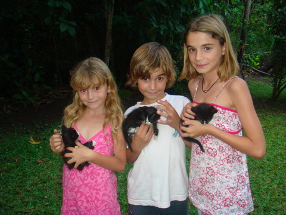 C'est pas mignon ? |
||||||||||||||||||||
|
23 octobre 2009 - Gambier, qu'est-ce qu'un guindeau ? Le guindeau est l'appareil qui nous permet de mettre et lever l'ancre. Lorsque l'on mouille, il n'est pas rare que l'on envoie 40 à 50m de chaîne, au bout de laquelle se trouve l'ancre. S'il est relativement aisé de 'jeter' l'ancre puisqu'emportée par son propre poids (et surtout celui de la chaîne) elle choit naturellement vers le fond,
remonter l'ancre est une autre histoire, car même avec l'aide d'Archimède et de sa célèbre poussée, l'ancre de 20kg et les 50m de chaîne pèsent lourd. Quand, en plus, la chaîne est tendue suite à la traction exercée par le bateau que le vent pousse, remonter la chaîne peut devenir une opération délicate. Pour ce faire, le guindeau est composé d'un moteur (généralement électrique) entraînant un axe auquel est fixé un barbotin (une espèce de roulette dentée en fonte) sur lequel la chaîne vient s'enrouler, un peu à la manière d'un pignon de roue de vélo.
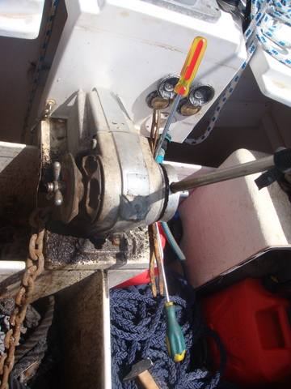 Le guindeau, avec à gauche le barbotin qui entraîne la chaine (que j'ai otée pour l'occasion). A droite, le mécanisme manuel Il arrive que le moteur grille, que les contacts électriques soient déficients ou que le doigt de Dieu se pose sur les mécréants que nous sommes et, dans ce cas, le guindeau électrique ne fonctionne plus. Il reste alors la procédure manuelle. Comme il est illusoire de 'tirer' à mains nues sur la chaîne, le guindeau est muni d'un dispositif permettant la remontée manuelle. Il s'agit d'un couple de roues semi-dentées qui s'emboitent l'une dans l'autre dans un sens (ce qui les rend solidaires de l'axe durant la remontée) mais qui 'glissent' l'une sur l'autre dans le sens de la descente, ce qui permet de désolidariser l'une des roues de l'axe de rotation du guindeau à la descente. Grâce à cet astucieux dispositif et d'une barre métallique insérée dans la roue 'libre', il est possible de remonter l'ancre, même si ce n'est pas une partie de plaisir.
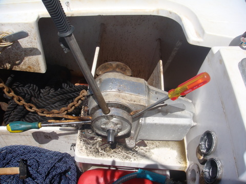 La roue dentée 'mobile' qui, dans notre cas ne l'était plus. Je l'ai extraite par tournevis interposés... Vous l'avez deviné: notre guindeau n'avait manifestement pas été entretenu depuis 5 ans et, lorsqu'un faux contact nous a privé de l'usage du moteur, nous avons réalisé que nous étions dans l'incapacité de lever l'ancre: le mécanisme manuel était complètement grippé (de chez H5N1). Il m'a fallu près de 6h pour extraire les roues dentées, complètement intégrées à l'axe. Enfin, un nettoyage au vinaigre, un brossage énergique au savon, un petit coup de papier émeri, et enfin un bon clouch de graisse marine et d'huile pour machine à coudre et hop! le guindeau était comme neuf. On peut à nouveau lever l'ancre ! |
||||||||||||||||||||
|
21 octobre 2009 - Gambier, Mokoto L'île principale des Gambier s'appelle Mangareva. Elle est dominée par deux sommets redoutablement escarpés: le mont Duff et le Mokoto. L'un comme l'autre culminent à plus de 400m et la seule pensée de gravir leur sommet fait frémir de peur les habitants de Rikitea, bourgade située à leur pied. Néanmoins, en ce jour d'octobre, le vent était faible, l'air clair et la température clémente, de l'ordre de 25°C. Ces conditions propices à la pratique de l'escalade (parce que pour le bobsleigh, c'est mieux quand il fait froid), nous incitèrent à nous lancer dans l'aventure.
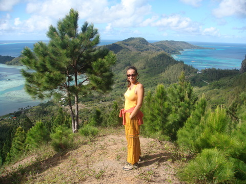 Cécile, sur un éperon rocheux dominant la baie de Rikitea Nous nous sommes élancés vers 14h à l'assaut de cette forteresse naturelle qui nous narguait impunément depuis trop longtemps. Après quelques semaines d'efforts insensés, nous sommes arrivés au sommet d'un piton, d'où l'on a pu prendre ce cliché insolite. Poursuivant notre ascension, c'est vers 16h que nous avons atteint l'altitude fatidique de 400m, proche de ce que l'on appelle 'la limite verticale'. Qu'à cela ne tienne, titubant sur la crête tels des acrobates, nous avons réussi à nous frayer un chemin jusqu'au sommet, où la raréfaction de l'oxygène nous exposait à des pertes de conscience pouvant s'avérer fatales, tant la pente était raide en cet endroit.
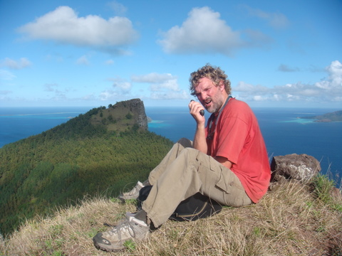 Eric, au sommet du Mokoto Enfin, vers 16h05, nous atteignions le sommet, enveloppé de nuages d'altitude. Malgré le froid intense, nous avons pu, au péril de nos vies, prendre quelques échantillons pelliculaires avant de devoir entreprendre la redescente périlleuse vers le bivouac. Quelques jours plus tard, nous retrouvions nos compagnons de voyage, restés au camp de base, l'oreille collée à la VHF pour se tenir au courant de notre équipée sauvage, pour ne pas dire suicidaire. |
||||||||||||||||||||
|
20 octobre 2009 - Gambier, réception de colis Bien que nous soyons au paradis sur terre, nous ne sommes jamais que sur terre. Aussi nous manque-t-il parfois quelques biens, totalement superflus, mais qui font très plaisir. Nous avons discrètement organisé un transport de marchandises de contrebande entre la Belgique et les Gambier. Nos complices, dont nous tairons le nom pour leur protection, nous ont fait parvenir des denrées variées, en utilisant un stratagème d'une grande astuce: l'envoi par la poste.
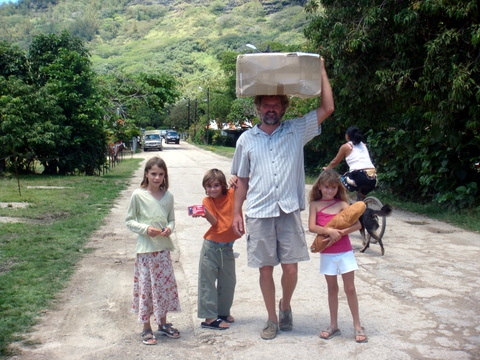 Eric, de plus en plus africain, revient de la poste avec le colis Il y a presqu'un mois, les 'tuut' de Cécile avaient envoyé le colis de Belgique. Depuis, les enfants demandaient chaque jour si le colis était arrivé. Nous commencions à manquer d'arguments pour les faire patienter quand, fort heureusement, la goélette est arrivée ce dimanche. Le temps de décharger et notre colis s'est retrouvé à la poste C'est donc là que je suis allé chercher, avec les enfants. A peine arrivés sur le bateau, nous nous sommes jetés sur le carton et l'avons déchiqueté, qui avec les ongles, qui avec les dents. Comme notre premier colis avait été ponctionné en cours de route, nous étions convenu d'une technique ayant fait ses preuves: le surremballage. Un peu comme vous qui allez chercher un paquet de CD au magasin et qui, comme moi, maudissez le fabricant d'avoir si bien conditionné ses articles, nous avions décidé de consommer trois rouleaux de scotch et d'emballer chaque objet dans un plastique foncé. De la sorte, le colis contenait au moins 15 paquets, chacun d'entre eux constitué de sous-munitions, elles aussi scotchées.
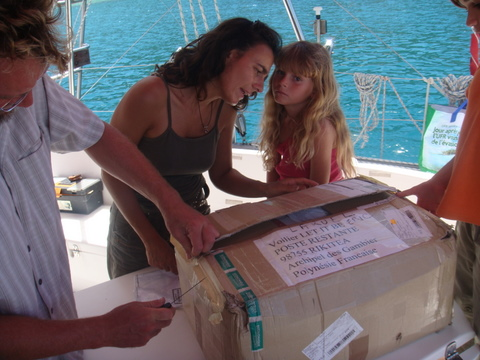 Le colis était bien emballé Il nous a fallu près d'une heure pour déballer le tout mais, en fin de compte, non seulement l'intégralité du contenu nous est parvenue mais nous avons tous été comblés. Les parents de Cécile ont vraiment pensé à tout: des vêtements pour les enfants et les parents, des bonbons, des revues, des condiments, quelques saucisses sèches et bien d'autres choses. Vraiment, la réception d'un colis, c'est un peu comme la Noël... |
||||||||||||||||||||
|
18 octobre 2009 - Gambier, élevage porcin En plus des 'grandes' îles, il y a également beaucoup de petits îlots (voire îlets) dans l'archipel. La plupart ne s'élève qu'à un ou deux mètres au-dessus du niveau de la mer. En général, on y trouve l'un ou l'autre palmier et quelques arbustes résistant aux conditions arides. Ces petites îles sont appelées MOTU en tahitien (d'où le nom Tuamotus). Aux Gambier, chaque motu, même le plus insignifiant, appartient à une famille.
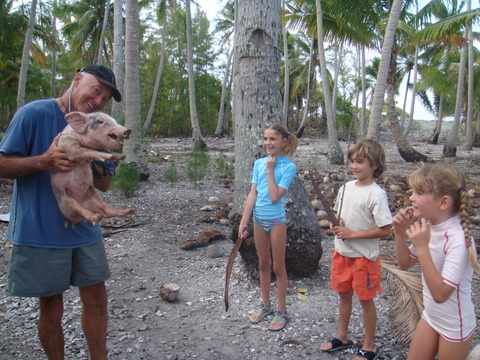 Les enfants hilares en entendant le porcelet grogner Sur les motus, il n'est pas rare de trouver du bétail, comme des chèvres, des poules ou des cochons. Sur Puaumu, il y a une truie, une jeune verrat et 4 porcelets qui se débrouillent pour survivre. La végétation est minimaliste et l'eau douce n'est pas abondante. Aussi, lors de notre passage, pris de pitié, nous avons décidé d'aider les cochons à se mettre quelque chose sous la dent.
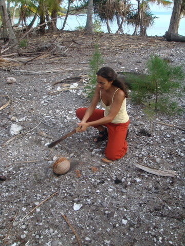 Cécile, redoutable à la machette Cécile en véritable africaine, nous a démontré ses dons pour la découpe à la machette et, grâce à sa rage débitatoire, les occupants des lieux se sont repus de nombreuses noix de coco. Il faut préciser que les motus étant inhabités, les cochons se nourrissent de ce qu'ils trouvent et, malgré leur grande voracité, ils ne sont pas capables de casser une noix de coco en deux.
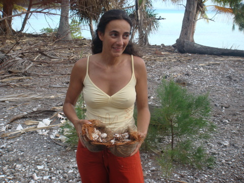 La noix de coco est un repas de roi pour les cochons |
||||||||||||||||||||
|
17 octobre 2009 - Gambier, lune noire Que peut-on bien faire aux Gambier le jour de la lune noire ? Aller à la cueillette des langoustes, cornebleu ! Ce soir, en effet, il n'y aura pas de lune et la marée sera basse à 19h. Les conditions sont donc optimales pour aller sur le récif et se saisir des langoustes qui y trainent.
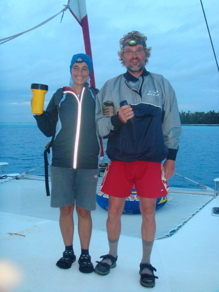 Eric et Cécile, parés pour l'opération LANGOUSTE La pêche à la langouste est au sport ce que le bal de l'école polytechnique est aux soirées mondaines: un sommet d'élégance. En effet, c'est une activité qui se pratique dans une tenue grotesque. Pour marcher sur le corail avec de l'eau jusqu'au genoux, il faut en effet des sandales en plastique et un short mais, pour ne pas se couper, il faut également des chaussettes. Puisqu'en plus il est de bon ton d'arborer une veste type coupe-vent pour se protéger des courants d'air frais de la nuit et des gants pour ne pas se blesser en ramassant les langoustes, on atteint le comble du raffinement. Enfin, heureusement c'est une activité qui se pratique la nuit, à la lumière d'une lampe torche, ce qui permet toutes les outrances vestimentaires (surtout quand, comme Cécile, on met un bonnet...) Nous avons déjà tenté notre chance hier. Je dois avouer que la marche sur le corail inégal balayé par les vaguelettes de fin de houle, en pleine nuit, éclairé par le faisceau de la lampe torche est un exercice dont j'ignorais la difficulté. A tel point que, piteusement, sous le regard déçu de ma femme, je me suis lamentablement étalé dans 20 cm d'eau. La honte. En outre, la soirée d'hier fût marquée par l'absence de 'chance du débutant' puisque ni Cécile, ni moi, n'avons trouvé la moindre langouste... Nous remettons le couvert dès ce soir et, forts de la technique acquise hier au péril de notre vie, je ne doute pas que nous reviendrons les bras chargés de ces délicieux crustacés. De fait, un jour n'est pas l'autre et la récolte de ce samedi fut grandiose. Bien que la capture des langoustes se soit révélée un tantinet plus compliquée qu'escomptée (je ne m'attendais pas à les voir se déplacer aussi vite, c'est étonnant), nous avons quand même réussi à ramener quelque victuaille: deux crabes, quelques burgots et, surtout, 2 'cigales', petits crustacés qui ressemblent furieusement à des langoustes naines.
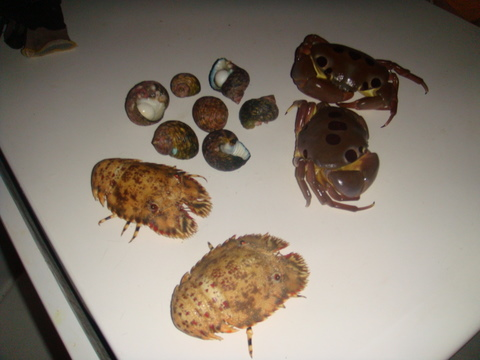 Le fruit de notre labeur Nous les avons fait cuire dès notre retour et nous les mangerons demain midi, avec un petit muscadet du Chili. |
||||||||||||||||||||
|
14 octobre 2009 - Gambier, venceremos ! Normalement, après ce cri (signifiant:"Nous vaincrons"), on entonne l'Internationale en espagnol ou, plus simplement, on ajoute: "El socialismo o la muerte". En ce qui nous concerne, le dégagement du bout dans l'hélice tribord a pris des allures de combat révolutionnaire, tant les événements semblaient s'enchaîner pour concourir à notre perte.
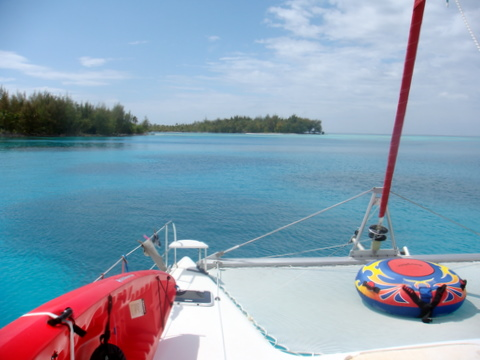 La passe Est de l'archipel Dans un premier temps, nous nous sommes levés à 6h du matin, incapables de poursuivre la nuit de sommeil en sachant le moteur hors service. A 6h30, j'étais dans l'eau mais, première mauvaise nouvelle, la houle de Sud avait levé un clapot d'une cinquantaine de cm dans le lagon, juste assez pour que je soit balloté contre la coque. Dans un deuxième temps, le courant venu du Sud a rafraîchi l'eau de 1 ou 2 degrés, suffisamment en tout cas pour que le bain matinal soit désagréable. Enfin, pour faire bonne mesure, le cordage était tellement bien enroulé autour de l'axe de l'hélice qu'il me fallut le 'hacher' à l'aide du couteau de plongée. Après une heure de ce petit jeu, j'étais frigorifié et au bord de l'asphixie suite aux 75 apnées consécutives. Je suis donc sorti de l'eau sans avoir réussi à enlever le bout et il m'a fallu 2h, une douche tiède, une tasse de thé, un bol de soupe, une heure de sommeil et surtout la chaleur humaine prodiguée par Cécile pour enfin rétablir ma température interne. Vers 10h, c'est donc Cécile qui a commencé à faire le sous-marin sous la coque. Avec une technique et une dextérité qu'apparemment je ne maîtrise pas, Cécile est parvenue, au prix d'une heure d'effort anaérobie, à découper un tour et demi de cordage. Et, curieusement, elle n'était pas hypothermée (sans doute est-ce dû au magnifique soleil qui nous innonda toute la journée). Quoi qu'il en soit, après cet effort, je repris le relais et, une demie heure plus tard, j'émergeais victorieux, un peu comme Jean Reno dans 'Le grand bleu' quand il venait de battre le record de profondeur. Sauf que moi, je tenais le dernier morceau de cordage ! Nous avions réussi ! Après vérification, nous avons pu confirmer que le moteur tribord était de nouveau opérationnel. C'est donc l'esprit serein que nous avons profité de cette magnifique journée aux Gambier.
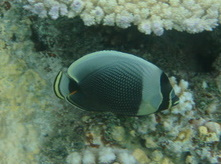 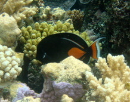 Les petits poissons multicolores Nous sommes retournés à la passe et, tandis que les filles faisaient mille et un jeux à la plage, Cécile, Sidney et moi allions nager dans la passe, où le spectacle mêlant corail, requins et poissons multicolores était une fois de plus étourdissant. |
||||||||||||||||||||
|
13 octobre 2009 - Gambier, boire et déboire Après 2 semaines de vent de sud-est soutenu, le vent de nord-est est revenu, assez mollement. Le changement de climat est assez spectaculaire puisqu'on passe de 21°C et 50% d'humidité à 27°C et 85% d'humidité. On en a profité pour aller visiter l'extrême est de l'archipel.
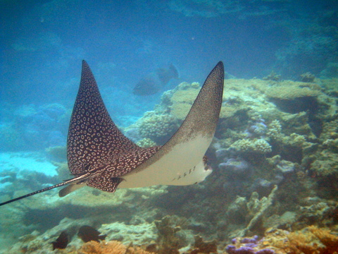 Une raie nous passe sous le nez La journée fut assez intéressante, commençant par un grand soleil qui nous a permis de snorkeler dans la passe et de prendre quelques belles photos. Vers 11h, le ciel s'est soudainement plombé et une petite pluie tropicale s'est mise à tomber. Après 2h de rinçage, nous avions récupéré 120 litres d'eau. Décidément, la gouttière bretonne fonctionne à merveille.
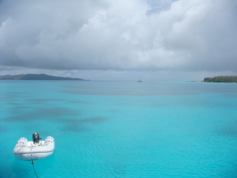 La lumière faiblit, les nuages semblent lourds, le silence se fait inquiétant: pas de doute, le grain approche Ensuite, nous avons décidé de changer de mouillage car la proximité d'une patate de corail ne nous inspirait pas confiance. Grossière erreur. En effet, lors de notre re-mouillage (à 200m du premier), nous avons pris l'amarre du dinghy (que nous n'avions pas pris la peine de remonter sous les panneaux solaires) dans l'hélice tribord. Le moteur a calé et Let It be a hoqueté, assez misérablement, il faut l'admettre. J'ai ôté mon tricot de corps, mon heaume ainsi que mon armure et, sans prendre le temps de saisir ma combi, j'ai plongé sous la coque complètement à poil. Je croyais naïvement que j'allais régler le problème en deux coups de cuillère à pot mais que nenni: ce fut le début d'une longue série de plongées en apnée pour moi. Bien qu'ayant réussi à dégager une partie du bout, il en reste coincé entre l'hélice et l'en-base du sail drive, ce qui nous empêche d'utiliser le moteur tribord. Comme la nuit est tombée, j'ai dû déposer les armes sans arracher la victoire. Mais la trêve ne durera que la nuit et, demain, muni d'un couteau, de mon masque et d'un troisième poumon, j'irai sectionner le cordage. Et il vaut mieux que j'y arrive car, sans cela, vous ne lirez jamais ces lignes. |
||||||||||||||||||||
|
11 octobre 2009 - Gambier, histoire, géographie, culture et autres considérations Depuis plusieurs semaines, nous sommes aux Gambier et je me rends compte que je n'ai pas pris la peine de fournir des renseignements utiles, permettant à mes lecteurs les plus zélés de parfaire leurs connaissances. Les Gambier sont un archipel, composé de 4 îles principales, entouré d'une barrière de corail. En forme de losange, donc les diagonales font 30 et 33 km (donc 4h de navigation maximum), l'archipel est situé à plus de 1500 km à l'est de Papeete, la capitale de la Polynésie française. Les îles sont situées par 23° sud et 135° ouest, soit relativement au sud de la Polynésie. En hiver (juin à septembre), la température oscille autour des 23°C, tant dans l'air que dans l'eau. En été, je ne sais pas. Mais il semble que la température monte aisément au-delà des 28°C. Le point culminant est le Mont DUFF à 440m tandis que la profondeur moyenne dans le lagon est de 50m, avec de fréquents hauts-fonds et des patates de corail qui affleurent un peu partout, rendant la navigation assez périlleuse. Curieusement, si vous vous éloignez d'1 km au large de la barrière de corail, la profondeur est de plus de 3000m. Les îles on été découvertes il y a bien longtemps par des gens, apparemment venu de l'est, dont les (rares) descendants peuplent encore l'archipel. Il y a 200 ans, il y avait plus de 10.000 habitants aux Gambier alors qu'il n'en reste que 1.500 de nos jours, la plupart n'étant pas d'origine Gambieroise. Après avoir connu une érosion lente jusque dans les années 70, la population tend maintenant a augmenter sous l'impulsion de la culture perlière, grande pourvoyeuse de main d'oeuvre et seule réelle activité de l'archipel (on compte plus de 60 producteurs référencés dans l'archipel). En 1834, Honoré LAVAL, un jésuite, fut envoyé ici pour évangéliser les foules. Bien qu'ayant provoqué la mort de centaines d'autochtones par la réalisation d'une série de travaux aussi majestueux qu'inutiles, Honoré est toujours honoré de nos jours. Pour ce qui est de la conversion, il fît un très bon travail puisque les habitants sont très croyants et ont des lieux de culte à la mesure de leur ferveur: il y a une grande église en pierre de corail sur chaque île, alors que la plupart ne sont plus habitées que par quelques familles. Les habitants sont d'une grande gentillesse et s'expriment en français, tahitien ou mangarévien. Beaucoup vivent de la perle mais il y a quand même 5 épiceries sur Mangareva (l'île principale), approvisionnées toutes les 3 semaines par goélette, et quelques snacks, puisqu'il est difficile d'appeler restaurant un endroit où l'on ne peut pas servir de boissons alcoolisées. Beaucoup d'habitants cultivent leur propre potager et certains vont à la pêche de temps en temps, ce qui fait qu'en plus de l'économie habituelle, il existe une économie de troc à base de thon et de patates douces. Pour les autres biens, il faut attendre la goélette de Papeete, qui assure l'approvisionnement de l'île, tant en pick-ups, qu'en lave-vaisselle, planches de bois, grillage, tuyaux ou pièces détachées. Comme la planification n'est pas parfaite, les pénuries sont fréquentes. Par exemple, à l'heure où j'écris ces lignes, il n'y a plus de tabac aux étals des magasins, ce qui donne lieu à des situations épiques tant il est vrai qu'un fumeur est prêt à faire n'importe quoi pour pallier l'absence de l'objet de son assuétude. |
||||||||||||||||||||
|
9 octobre 2009 - Gambier, anniversaire Depuis quelques heures, on le sentait venir. Au début, on est un peu guilleret et, sans que l'on puisse l'expliquer, chaque événement, d'ordinaire insignifiant, provoque des sentiments tumultueux et parfois contradictoires. Les heures passent et, petit à petit, furtivement, l'objet de nos pulsions se fait plus clair, plus net, plus imminent. Et puis ça y est, on le sent, on le vit et on en profite: c'est l'anniversaire de Roger et de Nancy ! Bon anniversaire ! Nos voeux les plus sincères ! Et que l'an prochain, on ait du vent d'est.
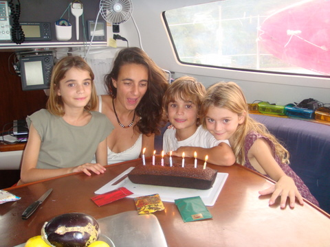 7 bougies avec un coefficient 6 ou 10, c'est selon... Je suis sûr que nombreux sont ceux qui se demandent si nous avons survécu aux conditions dantesques des semaines écoulées. Le vent soufflant sans répit, les tsunamis nous assaillant avec violence, tout semblait nous vouer aux gémonies. Et bien non, nous sommes toujours là, l'écoute à la main, la plume aussi. Certains s'interrogent. Quel miracle nous permet de tenir dans des conditions aussi adverses. Je vous le dis: nous ne sommes pas des héros, à peine des matelots que l'espoir d'une survie futile pousse à aller de l'avant. Aujourd'hui, par exemple, ce ne sont pas moins de 5 allers-retours que nous fîmes jusqu'au robinet. Eh oui, le déssal étant une fois de plus en panne, nous avons rempli nos réservoirs à l'aide de nos 2 jerrycans de 20L et de quelques bouteilles de 5L récupérées ça et là. Voilà à quoi l'on passe nos journées aux Gambier. Mais ne vous apitoyez pas sur notre sort. Aujourd'hui encore, malgré les conditions défavorables, nous avons pu acheter 2 kg de patates et 1.7 kg d'oignons, derniers vestiges d'une récolte légumière qui appartient désormais à un passé révolu. A partir de dorénavant et jusqu'à désormais, nous ne mangerons plus que du poisson et des patates avec des oignons. Tel est notre destin ! Sauf pour le komo, évidemment, puisque sa fabrication ne requiert que quelques grammes de sucre et de levure, en plus de l'eau et des bananes qu'on trouve en suffisance dans l'archipel. A l'heure où j'écris ces lignes, ce ne sont pas moins de 15L qui fermentent sur le pont. Quand on pense qu'un litre de vin (de messe) coûte 10€, on comprend pourquoi tous le monde boit du komo ici... |
||||||||||||||||||||
|
3 octobre 2009 - Gambier, ancrage Depuis une semaine le vent souffle entre 25 et 35 noeuds, ce qui nous empêche de bouger. On est protégé mais on est dans un lagon dont on ne peut sortir que par temps calme car il faut louvoyer entre les patates de corail. Le vent soulève un clapot qui rend la pêche au harpon impossible. Tout n'est pas sombre toutefois: le vent affole nos éoliennes, ce qui nous procure de l'énergie en suffisance pour éclairer un paquebot. Les enfants peuvent regarder des films sur la grande télévision que nous avions achetée en Martinique et qui avait été remisée jusqu'alors en cabine de pointe, faute d'électricité pour l'alimenter. En attendant, les enfants ne manquent pas d'imagination et se livrent à des activités variées, allant de l'apprentissage assidu à l'école au tournoi de poker (activité dans laquelle Sidney semble exceller), en passant par l'organisation de mariages.
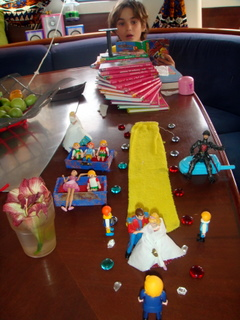 Le mariage princier. On reconnaît les témoins, le bourgmestre, l'escalier monumental et le long chemin bordé de bijoux ainsi que le public sagement assis sur les bancs Cécile continue sa formation dans la ferme perlière de Bertrand. Elle y emmène parfois les enfants, notamment pour la chasse aux perles ratées. En effet, lors de la récolte, les perles qui n'ont pas gardé le nucleus implanté produisent des perles difformes que les greffeurs ne récoltent pas parce qu'elles n'ont pas de valeur marchande. Les nacres ainsi refusées sont néanmoins traitées pour récupérer ces 'perles' dégénérées qui iront décorer les bijoux des petites filles du coin.
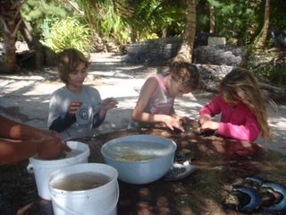 Les enfants recherchent les perles dégénérées Entre deux cours, Cécile se livre à le peinture en sable avec les enfants. Après avoir récolté, séché et tamisé des sables d'origine variée, elle a réussi à réaliser cette magnifique main pour Kenya,
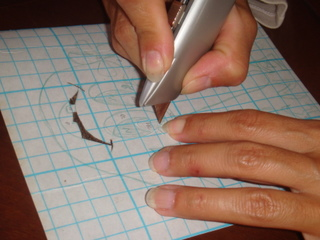 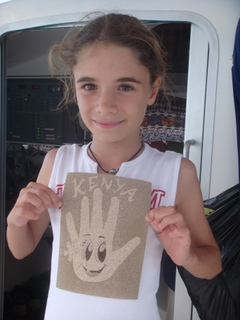 La main de Kenya, réalisée en sables des Gambier De mon côté, je peux enfin ouvrir les livres qui avaient tant alourdi nos bagages (et réparer le déssal, activité sans fin sur LET IT BE). Bref, comme on dit aux Gambier: "Tota ué té tiotou, maté toti uatété uru ti ua va'né", ce qu'on peut traduire librement par "La raison humaine est, de par sa nature, achitectonique, c'est-à-dire qu'elle envisage toutes les connaissances comme appartenant à un système possible". Dicton souvent repris par Kant, pour impressionner les gonzesses. |
||||||||||||||||||||
|
30 septembre 2009 - Bon anniversaire, papa ! |
||||||||||||||||||||
|
29 septembre 2009 - Gambier, Tsunami La vague consécutive au tremblement de terre qui frappa les Samoa ce 29 septembre 2009 à 8h du matin est arrivée aux Gambier quelques heures plus tard. D'ordinaire, un tremblement de terre sous-marin de magnitude 8.3 (comme celui d'aujourd'hui) génère un vague de plusieurs mètres de haut, qui déferle sur des milliers de km, progressant à plus de 800km/h en haute mer. Il s'agit de ce que l'on appelle un Tsunami et c'est un phénomène qui peut se révéler dévastateur.
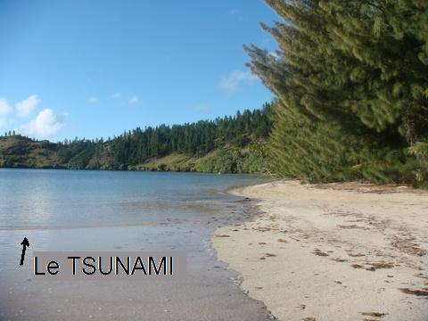 Le Tsunami Bon, je reconnais que celui-ci n'était pas apocalyptique mais on n'est jamais trop prudent... |
||||||||||||||||||||
|
28 septembre 2009 - Gambier, perliculture Alors que les bourrasques de vent continuent à balloter LET IT BE sur ses deux ancres, Cécile a décidé de se lancer dans la perliculture. Depuis deux jours nous nous rendons à terre à l'aube, afin d'aider Bertrand dans son entreprise de production de perles. Comme le vent souffle à plus de 30 noeuds, l'aller-retour en dinghy est assez folklorique et on arrive en général à terre comme si l'on avait pris un bain. Une fois sur place, on zigzague entre les cocotiers qui nous bombardent de leurs fruits exquis mais pesants et on laisse Cécile entre les mains de Bertrand, avant de rejoindre le bateau ancré dans la baie. La perle est produite par la nacre, un coquillage qui ressemble à s'y méprendre à une coquille Saint Jacques. Le processus de fabrication est un secret bien gardé que je vais divulguer pour la première fois sur internet, malgré les menaces de mort qui pèsent sur moi. Dans un premier temps, on plonge un 'truc', genre brosse géante, dans la mer, attaché à une bouée pour pouvoir le récupérer plus tard. Les mollusques s'y fixent pêle-mêle et, au bout de 18 mois, on retire la brosse, constellée de coquillages. On sélectionne les nacres (de 1 à 2 cm de diamètre à ce moment), qu'on récupère et qu'on fixe à des treillis de plastique à l'aide d'un fil de nylon, avant de les replonger dans l'eau du lagon. Après 18 mois au cours desquels elles sont extraites régulièrement de l'eau pour être nettoyées au karcher, les nacres ont atteint une taille respectable (environ 7-8 cm de diamètre). Il est alors temps pour la greffe.
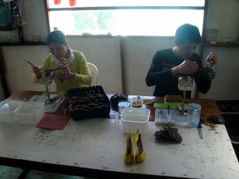 La greffe est une opération délicate. Un bon greffeur en traite plus de 1000 par jour Chaque nacre est sortie de l'eau, entrouverte un peu à la manière d'une huitre, et confiée au greffeur qui y loge une petite boule de quelques millimètres de diamètre, généralement obtenue à partir de la carapace d'un mollusque géant, type bénitier. Cette petite boule constitue le nucléus autour duquel la nacre va construire la perle. Afin de lui conférer une couleur intéressante, on greffe également dans le mollusque un petit lambeau de chair extraite de la carapace d'une autre nacre, sélectionnée pour la couleur de sa coquille. Evidemment, c'est cette greffe qui conditionne la couleur de la perle à venir, d'où l'importance de bien choisir les greffons.
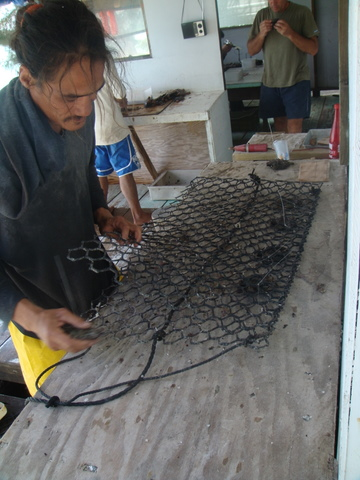 Les nacres greffées sont fixées sur des filets Quand la greffe est terminée, les nacres sont replacées dans leur filet, accrochées par des filins de nylon. Elles seront remises dans les eaux pures du lagon pour 18 mois de plus, avant la récolte finale, c'est-à-dire avant de récupérer le nucléus, entouré d'une substance irisée: la perle.
Il arrive cependant que les nacres soient trop petites au terme des 18 premiers mois. Dans ce cas, les greffeurs les refusent et elle retournent dans l'eau pour 6 mois supplémentaires. Et, justement, c'est Cécile qui s'y colle: elle les (re)fixe sur le filet qui les maintiendra dans l'eau. Au total, près de 15% des nacres sont perdues dans l'aventure, soit qu'elles n'arrivent pas à maturité pour accepter la greffe, soit qu'elles rejettent la greffe, soit qu'elles meurent après la greffe. |
||||||||||||||||||||
|
27 septembre 2009 - Gambier, zeph En ce dimanche de Pentecôte, nous nous sommes préparés. En effet, le vent s'annonce puissant et nous avons dès lors cherché à nous en protéger. Nous essayons d'une part de nous mettre à l'abri du vent derrière un relief naturel afin d'éviter qu'il n'emporte le bateau et, d'autre part, nous cherchons à minimiser la distance qui sépare le bateau de la plus proche terre émergée au vent (dans la direction d'où vient le vent). L'intérêt de mettre un obstacle entre le vent et le bateau est que la mer formée par le vent heurte l'obstacle avant le bateau. Les vagues qui frappent le bateau n'ont pas eu le temps de prendre de l'ampleur puisqu'elles se forment entre l'obstacle (une île ou une barrière de corail) et le bateau. D'où l'intérêt de jeter l'ancre à proximité d'une île.
Une ancre c'est bien, deux, c'est mieux. Voilà pourquoi, nous avons sorti notre mouillage secondaire, composé d'une ancre de 20 kg, de 20m de chaîne et 40m de bout.
Avec le dinghy, je place la deuxième ancre légèrement décalée par rapport à la première et je ramène le bout au bateau, pour l'amarrer sur un taquet. Grâce à ce stratagème, nous pouvons dormir sur nos deux oreilles (et il vaut mieux y arriver car les rafales de vent à plus de 30 noeuds font suffisamment de bruit pour nous maintenir éveillés). Toutes ces considérations météorologiques sont toutefois bien insignifiantes en regard des sauts de cabri que l'on peut faire dans les coussins du carré. Et c'est justement lors de l'un de ces sauts périlleux que Sidney a décapité la statuette sino-hélène de Cécile. Cette statuette fut réalisée au XXIème siècle de notre ère par une artiste inconnue sous le nom de Thalou et retrouvée sur une étagère par un archéologue amateur mais averti, lord Rabbit Wineval.
Heureusement, la résine époxy est vraiment très efficace et Cécile a réussi à recoller les morceaux. Mr Tchang pourra retrouver son trône dans le carré, dès qu'il sera sec. |
||||||||||||||||||||
|
26 septembre 2009 - Gambier, le saviez-vous ? Aux Gambier, il n'y a pas de coiffeur (pas plus que de boulanger, de bar, de quincailler, de libraire ou de marchand de meubles). Quand on a des petits soucis dans sa vie privée et qu'on souhaite changer de visage, on fait donc appel à une connaissance.
Durant une averse tropicale, les gouttières installées autour du bateau peuvent récupérer plus de 100L à l'heure. Par ailleurs, l'eau qui ruisselle du bimini peut aussi être récupérée. Elle est directement embouteillée pour être bue (l'eau des réservoirs n'a pas bon goût car le déssalinisateur ne fonctionne plus trop bien).
Les bananiers ne fournissent qu'un seul régime au cours de leur courte vie. Au pied de chaque bananier adulte, de petites pousses assurent la prochaine récolte. Pour cueillir un régime de bananes, on coupe l'arbre.
Kenya, en temps normal, possède un débit verbal invraisemblable. Quand elle est excitée, son élocution devient carrément incompréhensible, à plus de 500 mots par minute.
Les bouteilles de gaz qu'on achète en Martinique ne sont pas acceptées (ni échangées) ici. Celles de Guyane non plus. Et celles de Polynésie ne seront pas échangées en Nlle Calédonie et encore moins dans les territoires non français. Comme on a payé notre bouteille (le contenant, pas le contenu) 50€ dans les Caraïbes, on n'a pas envie de la jeter. Figurez-vous qu'on peut la remplir sans se rendre à l'usine. La preuve en image.
Grâce à un procédé dont l'ingéniosité n'a d'égale que la simplicité (ce qui est souvent un gage de succès), on peut transvaser le gaz d'une bouteille 'polynésienne' vers une bouteille 'antillaise', ce qui permet de ne pas accumuler les consignes à bord. On notera pour la petite histoire que la différence entre ces bouteilles est imperceptible au commun des mortels, notamment au niveau des embouts qui sont totalement identiques, ce qui facilite le transfert de gaz. Et comme je suis sûr que certains curieux se demandent quel est donc cette magie, sachez qu'il suffit de percer la membrane d'un détendeur (avec une foreuse) pour le transformer en 'robinet'. Il convient dès lors de placer un détendeur ainsi détendu à chaque extrêmité d'un tuyau et de relier à l'aide de ce dernier les deux bouteilles. On place la bouteille pleine en hauteur et la gravité fait le reste. Mais je m'égare. Il me faut en effet vous avertir que le blog sera muet pendant quelques jours. Dès demain, le vent va commencer à souffler de plus en plus fort pour culminer à 30 noeuds établis en milieu de semaine, avec des rafales à 50 noeuds (90 km/h). On va donc se trouver un endroit bien protégé et espérer que notre ancre ne nous lache pas. La bonne nouvelle, c'est qu'avec ce vent nos éoliennes vont produire à donf ! Au risque d'en décevoir quelques uns, j'avoue que nous sommes un peu inquiets car ce sera une première pour nous et quand on sait le bruit que fait une petite brise de 25 noeuds, on est forcément anxieux à l'idée d'avoir à affronter les rafales à près de 100 km/h (et la mer qui l'accompagne). |
||||||||||||||||||||
|
23 septembre 2009 - Gambier, avitaillement Au risque de me répéter, je ne résiste pas au plaisir de décrire l'activité quasi frénétique qui règne sur le port quand la goélette arrive. Je suis sûr que c'est ce genre de spectacle qui inspira Böhr quand il imagina la théorie des quantas. En effet, alors qu'en temps normal, le quai est désert et les enfants l'utilisent comme tremplin pour plonger dans les eaux claires de la baie, dès l'arrivée du cargo, la moitié des habitants de l'île se retrouve sur le quai de 500m² pour assister au débarquement des denrées. Bien que la plupart des assistants n'attendent rien du bateau, il règne une atmosphère fébrile et chaque palette débarquée sur le quai attire des dizaines de curieux, venus en 4x4, seul véhicule digne de ce nom aux Gambier, malgré les 16 km de routes recensés lors du dernier cadastre.
Ce mercredi, nous étions nous aussi sur le quai (mais sans le 4x4 que nous avions laissé à bord du cata) afin de récupérer un colis commandé à Papeete. Nous attendions effectivement une ancre pour le dinghy, 20m de cordage pour (re)fixer le trampo et une combinaison pour permettre aux enfants de flotter en snorkelant sur le corail. Nous avons donc, comme tout un chacun, inspecté chaque palette débarquée, malgré le papier que nous avions reçu le matin, précisant le numéro de la palette sur laquelle se trouvait notre colis. Il faut dire que malgré ma bonne volonté caractéristique des débutants, je ne suis jamais parvenu à trouver une palette portant le numéro indiqué sur mon bon. Toutefois, après avoir inspecté 18 palettes sans succès, j'ai fini par renoncer, en m'accrochant à la seule marchandise qui m'ait semblé quelque peu familière.
Vers 15h, alors que nous désespérions de recevoir enfin notre colis, nous avons entendu le subrécargue (si, si, ça existe) crier le nom de notre voilier et malgré la cohue qui règnait devant le conteneur, Cécile a réussi à se frayer un passage pour récupérer notre précieux colis. Et quand j'écris précieux, je le pense vraiment. Si l'on en juge par le type de colis que se font envoyer les locaux, on mesure l'isolement critique dans lequel se trouve l'archipel.
Bref, on a encore passé une journée pleine d'enseignements dans les Gambier où, décidément, Eric a bien fait de me conseiller de venir...A ce sujet, j'attends le matériel et les équipiers pour l'ascension du Makoto, prévue dans les prochaines semaines. |
||||||||||||||||||||
|
19 septembre 2009 - Gambier, Carpe Diem Après deux jours de grand bleu dans le lagon de sable blanc au nord de Mangareva, nous sommes retournés à Taravaï, dans l'espoir de refaire le plein de fruits et légumes frais. Nous y avons retrouvé Hervé et Valérie. Chacun a repris le cours de ses activités. Pour ma part, je continue à quadriller le lagon à la recherche des poissons chirurgien. J'en ai déjà harponné 8. Je pourrai bientôt me rendre à l'EPSMG* et tenter de passer le harponnet, voire le harpon de bronze. En attendant, ma première bananisation se termine et le Komo primeur est arrivé.
Cécile ne se contente pas de goûter le Komo. Elle a décidé de donner au bateau un petit air de kasbah. Elle n'a pas ménagé ses efforts pour arriver à ses fins. Non seulement le carré est maintenant tout cosy mais, grâce aux tentures, les rayons du soleil ne pénètrent plus à l'intérieur du bateau, ce qui lui permet de rester frais, surtout lorsque les hublots ouverts laissent passer une légère brise.
Quant aux enfants, la perspective de revenir à Taravaï signifie surtout les retrouvailles avec Allan, le fils de Hervé et Valérie. Lors de notre dernière visite, Sidney avait enfin pu jouer à la guerre avec un autre petit garçon et il lui tardait de remettre le couvert.
A part cela, nous sommes également allés manger un barbecue chez Edouard et Denise, le troisième couple habitant l'île. Ils ont un potager plein de merveilles: tomates, courgettes, aubergines, salades, patates douces, papayes, melons, etc. Leur grand problème est que la terre est relativement pauvre et qu'ils n'ont pas d'engrais. Edouard, se débrouille comme il peut, en utilisant le compost local (le fruit de sa tonte, bien maigre cependant). Quant aux herbicides et insecticides, ils sont inconnus ici. Donc, tous les 'trucs' bio que vous connaissez pour enrichir la terre ou se débarrasser des insectes sont les bienvenus. Par exemple, je me souviens que mes parents plantent des piments entre les tomates. Pourquoi ?
* EPSMG: Ecole de Pêche Sous-Marine des Gambier. |
||||||||||||||||||||
|
16 septembre 2009 - Gambier, on a trouvé le poisson belge On attendait cela depuis quelques jours: plus de vent et un grand ciel bleu. Et c'est arrivé ! Avec, en prime une température très agréable pour cette fin d'hiver: 27*C. On a donc délaissé la capitale et ses routes enneigées pour rejoindre le lieu-dit "Totegegie". Il s'agit d'un minuscule banc de sable situé à la pointe nord-est de Mangareva, l'île principale des Gambier. En plus, ça faisait un petit moment que l'on n'avait plus diffusé de photos de plages de rêve...
La particularité de l'endroit, outre ses eaux limpides et poissonneuses, c'est justement d'être totalement sans intérêt. Il n'y a donc personne et nous mouillons dans le plus grand calme par 2m de profondeur.
Dès notre arrivée (pour une fois, nous étions partis de bonne heure: 8h du mat, après le petit déjeuner), les enfants se sont mis à travailler studieusement avec l'aide de Cécile. Pendant ce temps, je suis parti pêcher et, contrairement à une habitude bien établie; j'ai ramené deux Umés, de quoi nourrir toute la famille, si l'on considère que les enfants préfèrent manger des hamburgers surgelés ou, pour le moins, du poisson sans arêtes style thon ou thazard. Bref, je fais maintenant partie du cercle très fermé de "ceux qui savent pêcher des Umés au harpon" et je n'en suis pas peu fier. A tel point que je n'ai pas pu résister au plaisir de retourner dès l'après-midi sur les lieux de mon exploit avec Cécile, pour faire le beau et espérer quelque faveur. Cécile a bien gentiment accepté de flatter mon ego de mâle (n'y voyez aucun sous-entendu libidineux) et nous avons revêtu nos combinaisons de plongée pour revivre la scène du matin. L'appareil photo avait remplacé le harpon, ce qui nous a permis de photographier le célèbre poisson belge.
Qu'est-ce qu'on rigole aux Gambier quand même... PS pour Eric: je suis déjà monté au sommet du Mt Duff, à 440m, mais j'étais seul et il faisait brumeux. Le Makoto, on le fera en famille avant de partir et je te promets de te dédier une photo... |
||||||||||||||||||||
|
14 septembre 2009 - Gambier, Polynésation Puisqu'on est là pour quelques mois, autant s'habituer rapidement aux coutumes locales. Nous avons déjà opté pour "Ia Orana" qui veut dire "Bonjour" et le "Nana" qui veut dire "Au revoir". Nous avons également fait des progrès pour acquérir, en plus de notre inimitable accent brusselwa, une petite touche locale en roulant les 'r' et allongeant les 'a'. Mais cela ne suffit pas. Comme bon sang ne saurait mentir, je me suis mis à la fabrication du Komo. Le Komo, c'est la bière locale: légèrement alcoolisée, légèrement pétillante et un rien amère. On remplace le houblon par la banane et on ajoute un zeste de citron. On laisse fermenter quelques jours (avec l'eau, le sucre et la levure bien entendu). Et l'on filtre le tout.
Après avoir filtré le produit de fermentation, on le met au frais, dans le frigo, pour que la fermentation s'arrête que le reste de levure se pose sur le fond par décantation. Toutefois, il est recommandé de goûter après fermentation et avant la mise au frigo, afin de s'assurer de la bonne qualité du breuvage et, le cas échéant, de pouvoir rectifier un peu le tir.
Il arrive parfois, en effet, que les proportions ne soient pas respectées, que la température extérieure soit inadéquate ou que ce soit la pleine lune. Dans ces cas, rares il est vrai, le Komo peut s'avérer d'une âpreté rêche, allant parfois jusqu'à l'imbuvabilité. C'est justement ce qui m'est arrivé lors de cette première tentative, probablement parce que les bananes n'étaient pas assez mûres. Quoi qu'il en soit, nous ne menons pas que des activités illégales aux Gambier. Nous sillonnons la capitale depuis plusieurs jours à la recherche de tissus pour décorer le bateau. Il est vrai que chaque visite à bord d'un autre navire nous donne de bonnes idées car la plupart de ceux qui nous entourent sont partis depuis plusieurs années. Ils ont personnalisé leur bateau et, de ce fait, l'ont rendu plus agréable à vivre. Par comparaison, le nôtre, bien que d'une esthétique intrinsèquement supérieure aux autres, ressemble encore fort à un bateau de charter, impersonnel et froid.
Et comme il ne suffit pas de faire du Komo et de rouler les 'r' pour être aux couleurs locales, Cécile s'est aussi mis quelques fleurs dans les cheveux. Elle a trouvé des tissus aux motifs bigarrés très à la mode en ce coin du monde, qui ne sont pas sans rappeler les étoffes africaines. Nous sommes tous impatients de voir notre bateau se polynéser sous la houlette de Cécile, notre décorateur en chef. |
||||||||||||||||||||
|
12 septembre 2009 - Gambier, monsieur météo était une femme Nous continuons à écumer les bars et les restaurants de Rikitea. Nous en avons déjà fait deux. Plus que deux et nous pourrons écrire un guide gastronomique complet sur les Gambier. Après le repas de midi, nous avons entamé notre petite promenade digestive en direction de l'observatoire météorologique de Rikitea. En effet, non seulement la capitale des Gambier abrite l'une des plus belles églises de Polynésie, mais c'est aussi l'un des lieux choisis par MétéoFrance pour installer l'une de ses stations.
Comme il se doit, la station se trouve en hauteur. Sur le chemin escarpé qui y mène, nous avons pu admirer une fois de plus la luxuriante végétation de l'île. Arrivés à la station, nous avons été reçus par Carine, chef de base, qui nous a gentiment présenté et expliqué les appareils de mesure qui jalonnent la base.
Mais le clou de la visite, c'est le lâcher de ballon sonde. Tous les jours, à 14h, on lâche un ballon muni d'une petite station météo qui relève la température, la pression, l'hygrométrie et la vitesse du vent en fonction de l'altitude. Le ballon est rempli d'hydrogène et s'élève assez rapidement pour atteindre 30 km d'altitude. Il existe des centaines de stations de par le monde qui exécutent semblable mission chaque jour. Les données envoyées par le ballon sont captées au sol et centralisées à Toulouse pour alimenter le modèle prévisionniste de MétéoFrance.
Sidney et Syr Daria ont eu le plaisir et l'honneur de lacher le ballon de ce samedi 12 septembre 2009. Et je peux vous dire qu'ils étaient tous deux très fiers de contribuer au bien-être du monde civilisé. Pour la petite histoire, le ballon gonfle au fur et à mesure de l'ascension, atteignant la taille respectable de 30m de diamètre avant d'éclater... |
||||||||||||||||||||
|
10 septembre 2009 - Gambier, activités variées Une petite pensée nostalgique pour les nombreux parents qui ont repris le chemin de l'école, le matin, pour y loger leur progéniture pleine d'avenir. En ce qui nous concerne, l'hiver s'éloigne doucement, et la rentrée scolaire n'est qu'un souvenir. Les cours se succèdent en effet chaque jour et il faut toute la volonté d'une Kenya pour ne pas fléchir et résister à la tentation de plonger dans l'eau plutôt que dans ses cours de maths.
Eric devient de plus en plus local, tant au niveau capillaire qu'au niveau culinaire. Aujourd'hui, après le cassage de noix de coco sur le pont pour assurer la collation de 10h, c'était le petit barbecue d'umés tare, pêchés au harpon par Bertrand (en tant qu'océanographe, je suis opposé à toute forme de violence et refuse obstinément de tuer des poissons avec cet engin barbare que je manipule pourtant avec assiduité depuis deux semaines).
Bertrand, notre voisin, est un perliculteur réputé du lagon mais aussi un pêcheur hors pair. Ce matin, nous sommes partis à deux pêcher sur le tombant et, pendant que je revenais brocouille, suite à un problème technique, Bertrand a ramené 7 umés. Dans un geste de bonté inconsidéré (et qui défie toute logique), il nous en a donné 3 (ce que nous avons accepté puisque moi-même, n'était ce petit incident, j'aurais certainement harponné de nombreux poissons et je n'aurais pas hésité à en donner à un confrère malchanceux).
Quant à Syr Daria, sa passion pour les animaux est de plus en plus évidente et elle s'est fait de nombreux amis sur terre, même si chaque retour sur le bateau est l'occasion d'adieux déchirants. Elle a déjà introduit trois demandes officielles pour héberger un animal à quatre pattes sur Let It Be mais sans succès. En tant que capitaine, Cécile doit parfois faire des choix difficiles, coincée entre les aspirations de sa petite princesse et l'étroitesse d'esprit de son lieutenant barbu (c'est moi, et j'ai averti l'équipage: si je vois un chien ou un chat à bord, je le mange).
Nous nous faisons lentement au rythme trépidant de la vie aux Gambier: école à bord de 9h à 13h, barbecue sur le pont, plage, PMT (palmes, masque, tuba), vaisselle, re-plage, rando, pêche au harpon, démontage du déssalinisateur et nettoyage du bateau. Sidney a même revêtu le 'shorty' de Cécile pour aller voir les requins avec moi. Et il n'a pas été déçu: on en a vu de près. Même si, pour Sidney, la mer est encore un peu froide, il a quand même pu réaliser l'un de ses rêves: nager à 2m d'un requin, en vrai !
Bref, on va encore rester quelque temps ici, surtout que d'ici deux semaines les greffeuses de perles vont arriver chez Bertrand, afin de traiter ses nacres de manière à ce qu'elles produisent de belles perles sombres aux reflets irisés dès la prochaine saison. Je promets de divulguer sur ce site tous les secrets ancestraux de la culture de perles auxquels j'aurai pu avoir accès. Et, à vue de nez, je n'aurai pas de quoi écrire grand'chose. |
||||||||||||||||||||
|
6 septembre 2009 - Gambier, petite leçon de choses Le vent continue à souffler de secteur est avec force (toujours 20 à 25 noeuds établis). Nous avons néanmoins décidé d'aller à terre pour saluer Rémi, le fils de Bertrand (celui qui habite la maison flottante en face de nous). Rémi est arrivé ici avec son père lorsqu'il avait 15 ans. Il en a maintenant 10 de plus et vit à Akamaru. Il vit de la nacre et cultive son petit lopin de terre. Quand le vent se lève, comme maintenant, il tire des bords dans le lagon avec sa planche à voile. C'est vraiment un mec super-sympa qui, non seulement fait plus couleur locale que les locaux, mais connaît aussi tous les recoins de l'île. Il y a quelques jours, il est passé au bateau avec ses potes du coin. Ils nous ont fait cadeau d'un superbe régime de bananes, d'oranges amères pour faire des jus, de piments pour la sauce, de menthe fraîche pour le thé et de citrons pour les ti-punchs.
Pour tenter de le remercier, nous lui avions proposé de lui filer tous les films que nous avions. Nous avons donc échangé nos disques durs portables (eh oui, les temps sont loin où l'on s'échangeait des fleurs et de la verroterie). En arrivant à terre, nous avons attaché l'annexe au petit quai aménagé en face de sa maison puis nous sommes partis à sa recherche car il n'était pas chez lui..
En marchant, nous entendions des bruits sourds à intervalles irréguliers. Il nous a fallu près de 30 minutes pour réaliser que c'étaient des noix de coco qui tombaient, poussées par le vent violent. Dès ce moment, nous avons marché la tête en l'air, dans la crainte de nous faire écraser par un de ces projectiles.
Quand nous avons enfin trouvé Rémi, il nous a confirmé le vieil adage polynésien: "Vent puissant sur la mer, pluie de cocos sur la terre". |
||||||||||||||||||||
|
5 septembre 2009 - Gambier, rienfoutage A part le feu de bois, la raclette et la neige, on se croirait en hiver dans les Alpes. Enfin, avec un peu d'imagination quand même. Depuis ce matin, le vent souffle du sud à 20/25 noeuds et la température doit osciller autour des 20°C. Bref, il fait froid et nous restons cloîtrés à l'intérieur du bateau, où les activités sont nombreuses et variées. En ce qui me concerne, je mène toujours un combat au corps à corps avec le moteur bâbord pour essayer d'avoir enfin de l'eau chaude à bord. Aujourd'hui, j'ai essayé de décrasser la boucle de chauffage en soufflant de l'eau dans les tuyaux (je reconnais que cette technique n'a rien d'avant-gardiste mais c'est tout ce que j'ai trouvé...). Apparemment, ça n'a pas suffit: l'eau refuse toujours obstinément de chauffer. Va falloir que je trouve autre chose. En attendant, j'ai aussi profité de cette moche journée pour remplacer le fusible de l'onduleur (le truc qui convertit le 12V des batteries en 220V pour faire tourner la machine à pain, par exemple). Le fusible précédent (du 65A ?) a grillé et mon fusible de rechange de 160A n'avait évidemment pas la même taille: il ne 'rentrait' pas. Le remplacement a donc mis 1h au lieu de 30 secondes. Quand je vous disais qu'on trouvait toujours quelque chose à faire sur un bateau. Les enfants suivent leurs 3 heures d'école quotidiennes, ce qui suffit en général à les exciter comme des coucous. Cécile, quant à elle, finit la classe sur les rotules, après avoir expliqué 18 fois comment on convertit des tonnes en kilos... 3 niveaux simultanément avec 3 enfants impatients, c'est du sport de haut niveau ! Et quand la classe est finie, l'entretien du bateau commence. A titre d'exemple, les toilettes du bateau ne fonctionnent pas tout-à-fait comme à la maison: il est hors de question de 'gaspiller' 10L d'eau chaque fois que l'on veut se soulager. En fait, les toilettes sont munies d'une pompe à main qui permet de rincer la cuvette à l'eau de mer. Inutile de préciser que le maniement d'un tel engin n'est pas à la portée du premier enfant venu. Il n'est pas rare que l'un ou l'autre 'oublie' de pomper ou le fasse incorrectement. Résultat: Cécile passe régulièrement dans les toilettes pour s'assurer que tout va bien (et, accessoirement, donner un petit coup de propre...). Et ce n'est qu'une des tâches quotidienne de Cécile, qui doit aussi ranger le bordel permanent laissé par les enfants dans leur coque. Au début, on les avait responsabilisés: à eux de s'occuper de leur flotteur. Résultat: après un mois il fallait s'encorder pour se rendre dans la cabine de proue et obstruction définitive de la coursive après 2 mois. Donc, on a revu la théorie et Cécile s'occupe maintenant du suivi du rangement... Le soir, j'ai profité de la quiétude qui régnait dans le bateau pour monter les nombreux films que nous faisons mais que je ne peux pas mettre en ligne pour cause de bande passante déficiente.
Au total, nous avons déjà filmé au moins 4/5 heures de nos aventures. J'essaie de les monter au fur et à mesure, en coupant, commentant, regroupant et en mettant en musique. Le résultat est assez sympa (même si les débuts furent un peu laborieux). J'espère pouvoir monter un film complet pour la soirée de retour que nous organiserons sûrement (et qui sera mémorable, comme le fût la soirée de départ). |
||||||||||||||||||||
|
3 septembre 2009 - Gambier, promenade à Akamaru Il est des jours propices aux grandes décisions. En tant que parents, il nous faut parfois faire preuve d'audace. Après concertation, nous avons décidé de tenter une nouvelle approche pédagogique. Les enfants doivent en effet apprendre à gérer eux-mêmes leur apprentissage, même au niveau scolaire. Ce matin, les enfants ont suivi les cours de l'EAD rien qu'entre eux, Kenya aidant Syr Daria et Sidney s'aidant tout seul. Par une curieuse coïncidence, il faisait un temps splendide aujourd'hui: pas un nuage dans le ciel. Cécile et moi en avons profité pour tenter l'ascension de la face nord du mont Akamaru. L'idée était non seulement de marquer les esprits par un exploit sportif sans précédent mais aussi de prendre des photos hors du commun tant l'air était clair.
La face nord du mont Akamaru présente la particularité, non pas d'être enneigé comme me le suggèrent des petits malins, mais très densément arborée, surtout durant le premier tiers de l'ascension, soit une centaine de mètres de dénivelé. Nous avons donc pris soin de demander à Maria, une habitante de l'île, le meilleur chemin. A son air amusé, nous avons mesuré à quel point notre entreprise était, sinon hasardeuse, au moins révélatrice de l'esprit tortueux des poppas. Les poppas, c'est nous, les blancs. En un mot: il n'y a pas de chemin car personne n'a l'idée stupide de monter là-haut, à part les chèvres bien sûr. Avec une logique digne de Sherlock, j'en conclus qu'il suffirait de suivre les petits cacas ronds, signes indubitables du passage des caprins. Devant notre détermination, Maria accepta néanmoins de nous montrer le point de départ d'un chemin qui partait du village. Déjà, c'était suspect: pas la moindre crotte et un sentier pour le moins discret. On a quand même salué Maria et, d'un pas décidé, nous nous sommes enfoncés dans la forêt, en faisant semblant de savoir où l'on allait. Après 3 minutes, le sentier avait disparu et nous avancions péniblement dans une forêt de plus en plus dense.
Après 1h et demi de grimpe, on était complètement perdu et pas du tout au sommet de la montagne (même pas au tiers, à dire vrai). Nous commencions à être fatigués et, sans le courage et la pugnacité de Cécile, j'aurais abandonné depuis longtemps cette folle entreprise, dans laquelle nous risquions de plus en plus de périr à jamais. Heureusement, après avoir suivi le lit d'une rivière asséchée (ce qui nous permettait de progresser), nous avons découvert un arbre majestueux trônant au milieu d'une petite clairière.
Un peu plus loin, nous avons dû définitivement renoncer, repoussés par une barrière infranchissable de graminées gigantesques, genre herbes de la pampa mais avec des épines remplies de venin et des fleurs carnivores. Bref, on a lamentablement échoué et on est revenu brocouille, mais la tête pleine d'images insolites et le coeur fier d'avoir tenté un exploit unique. |
||||||||||||||||||||
|
2 septembre 2009 - Gambier, anniversaire de Syr Daria Une fois n'est pas coutume, aujourd'hui il faisait belge aux Gambier: 20°C, petite bruine et ciel plombé. On est resté dans le carré toute la journée (sauf Eric qui tente depuis 2 semaines d'avoir de l'eau chaude à bord en chipotant dans la cale moteur bâbord). Bref, dès les cours du matin terminés, Cécile et les enfants ont pu se concentrer sur l'anniversaire de Syr Daria. Cécile a donc revêtu son costume de patissière (j'adore, regardez le pantalon :-O) et s'est mise au moelleux au chocolat !
Je suis d'un naturel optimiste, toujours prêt à supporter les initiatives les plus folles, comme celle de fabriquer un gâteau au milieu du Pacifique, alors que l'on dispose d'un four digne d'une cuisine témoin et des ingrédients d'origine douteuse, mais, pour le coup, je n'aurais pas misé un kopeck sur les chances de Cécile de réaliser quelque chose de comestible. Et pourtant, le moelleux était excellent, voire moelleux. Décoré de quelques bougies, il fît la joie de Syr Daria.
Et comme un bonheur ne vient jamais seul, Syr Daria a également pu découvrir, très impatiente, son cadeau du bout du monde: une poupée Wynch (et, croyez-moi, on ne trouve pas ces poupées aussi facilement que des citrons ou des bananes).
Pour terminer la journée, nous avions prévu une petite entrée spécialement pour Syr Daria : du saumon fumé. Aux Gambier, trouver du saumon fumé, c'est comme manger des fraises en hiver à Bruxelles: un exploit coûteux et contraire au bien-être de la planète. Ici, le vent souffle du sud depuis 3 jours, apportant froid et pluie. Enfin c'est relatif puisqu'il fait entre 20 et 25°C. Il devrait se maintenir encore quelques jours supplémentaires de secteur sud avant de virer à l'est puis au nord. La température redeviendra supportable... |
||||||||||||||||||||
|
31 août 2009 - Gambier, ascension à Mekiro Aujourd'hui, après les formalités scolaires de la matinée, nous avons décidé d'escalader l'un des plus hauts sommets du coin: le mont Mekiro, qui culmine à 50m et offre une vue carteportalesque des environs. La ballade dure une petite heure et le spectacle est vraiment étourdissant.
Comme nous pensions que l'ascension pouvait être un peu difficile, nous avions abandonné les enfants sur une plage déserte. Pour survivre dans ces conditions difficiles, ils ont dû faire preuve d'imagination. La nourriture se faisant rare, Sidney n'a pas hésité à manger des noix de coco. Enfin, quand je dis 'manger', je veux dire 'essayer de manger'. Pour les incultes, les noix de coco, ça ne tombe pas des arbres comme dans la pub bounty. La noix est en effet entourée d'une gangue verte qui, lorsque la noix est mûre et tombe de l'arbre, devient grisâtre. Pour accéder à la noix et la manger, il faut donc d'abord ôter la gangue, tâche ingrate et laborieuse, comme Sidney a pu s'en rendre compte:
Encore une journée éprouvante aux Gambier, où, décidément, la vie est dure. |
||||||||||||||||||||
|
30 août 2009 - Gambier, barbecue à Mekiro Rien de tel qu'un petit barbecue le dimanche, en famille. Dès le matin, j'avais revêtu ma combinaison de plongée et, m'emparant du harpon, j'étais parti sur la barrière de corail pour prendre quelques poissons à faire griller sur les flammes. Vers 11h30, je suis rentré brocouille, comme on dit par chez nous. Heureusement, j'avais fait dégeler un peu de viande pour le cas improbable où la pêche s'avérait infructueuse, en raison de problèmes techniques, par exemple. Malgré le mauvais temps qui règne en ce moment sur les Gambier et les bourrasques de vent glacial de cette fin d'hiver, nous n'avons pas hésité à nous rendre sur l'îlet le plus proche et à nous réunir autour d'un brasero, bien utile pour lutter contre l'engourdissement. Chacun a apporté un peu de nourriture et nous avons mangé à l'ombre d'un arbre centenaire.
Les enfants ont profité de la minuscule plage pour se livrer à leurs activités nautiques favorites: élevage de mollusques pour Kenya, snorkeling pour Syr Daria et surf pour Sidney.
Vers 14h30, Gary, Sabine et Sohan ont dû rentrer sur la capitale afin d'éviter les bouchons du dimanche soir (et surtout parce que la marée était haute à ce moment, ce qui leur permettait de sortir du lagon). |
||||||||||||||||||||
|
29 août 2009 - Gambier, rendez-vous à Mekiro Le titre du post d'aujourd'hui fait un peu penser à SAS (Son Altesse Sérénissime, Malko Linge, pour les intimes). Cependant, Mekiro existe bel et bien: il s'agit d'un ilet adossé à un ilot (Akamaru). Nous nous y sommes rendus aujourd'hui afin d'y passer cette dernière semaine de vacances. De Rikitea, il faut une heure de moteur pour traverser le lagon et venir mouiller ici dans des eaux anormalement bleues. Enfin, quand je dis "vacances", je pense surtout à vous qui avez bien profité de cet été pour boire des daiquiris les pieds dans la mer. Fini de rire, bientôt la rentrée! En ce qui nous concerne, le voyage continue, toujours aussi éprouvant. L'île que nous visitons cette semaine doit bien mesurer un km de long. C'est dire s'il nous faudra au moins une semaine pour la parcourir. Nous y avons rejoint Gary, Sabine et Sohan, venus ici pour le week end à bord de leur voilier, le Sarah. Et nous avons trouvé un petit mouillage sympa par 1.6m de fond, dans un champ de patates (de corail), à deux pas de la maison flottante de Bertrand et Lucie, cultivateurs de perles de leur état, mais néanmoins fort sympathiques.
Comme il faisait beau et que la température avoisinait les 28°C, nous avons décidé de faire cuire quelques cuisses de poulet sur le BBQ, avant d'aller à la plage.
Nous avons déposé les enfants à la plage avant d'aller boire le café chez Gary et Sabine. En fin de journée, éreintés par tant d'efforts, nous sommes allés récupérer les enfants avant de rejoindre Bertrand et Lucie qui nous ont chaleureusement invités à boire le komo, boisson locale dont la recette de fabrication est un secret bien gardé (mais ça pétille et ça goûte la banane). Vous l'aurez remarqué, on passe beaucoup de temps à discuter chez les uns et chez les autres, mais à quoi bon le nier, la vie aux Gambier est âpre et les moments de détente rares, alors on se serre les coudes... |
||||||||||||||||||||
|
25 août 2009 - Gambier, visite à Hervé et Valérie Depuis quelques jours, le vent est tombé et le lagon est particulièrement calme. Cela nous a déjà permis de faire quelques PMT assez sympathiques (les Français aiment les acronymes et trouvent que 'snorkeling', c'est pas très joli, alors ils utilisent PMT pour palmes, masque, tuba. Je ne sais pas si le discours gagne en poésie mais nous, Belges, on est conciliant). Bref, on apprécie notre séjour avec sérénité et on commence à s'intégrer doucement à la société locale même si cela nous demande des efforts constants: ne pas se fatiguer inutilement, profiter du temps présent, manger ce que la nature nous apporte, saluer chaque personne que l'on croise et offrir ce que l'on peut. En observant ces règles, il nous aura fallu près de 3 jours pour préparer notre venue chez Hervé et Valérie, couple de jeunes Polynésiens vivant sur Taravaï, à environ 300m de notre mouillage. On s'est donc rendu à terre dans leur petit paradis. Comme il se doit, nous avons été chaleureusement accueillis: les noix de coco nous attendaient et Kenya pût en profiter sur le champ.
Hervé et Valérie vivent avec Allan, leur jeune fils de 6 ans, sur l'île. Pour bien mesurer leur situation, précisons d'emblée qu'ici, il n'y a pas d'eau courante, pas d'électricité, pas de magasin, pas de route, rien. Les 6 habitants vivent donc en semi-autarcie, alimentés en énergie pas des panneaux solaires, en eau par la pluie et en légumes par leur potager. Quant aux protéines, ils leur faut compter sur le cochon, les poules et leurs oeufs et les poissons du large. Les fruits tombent quant à eux littéralement des arbres. Même en plein hiver (c'est-à-dire maintenant), il y a des bananes, des cocos, des citrons et des pomelos. Plus tard, au mois de décembre, il y aura des avocats, des mangues, des litchis, des papayes, etc.
En attendant, Hervé m'a fait visiter son jardin, qu'il a aménagé lui-même au prix d'un travail journalier et assidu. Non seulement a-t-il défriché une parcelle de terre autour de sa maison (qu'il a construite de ses blanches mains en acheminant tous les matériaux de Rikitea avec sa barque), mais il a également pris soin d'y planter des arbres fruitiers, des arbustes décoratifs et il entretient même un potager où l'on peut trouver des tomates, des haricots, des concombres, des patates douces, des poivrons, et d'autres légumes. Et, comme je lui demandais si les tomates poussaient bien, il me confirma que la lutte contre les pucerons était permanente (et ceux d'entre nous qui s'y sont déjà essayés savent que ce n'est pas un vain mot, surtout quand, comme Hervé, on n'a pas le moindre pesticide). Pendant ce temps, Valérie montrait son art à Cécile: elle réalise des peintures en sable. En fait, elle dessine sur un papier collant (le genre de ceux qu'on utilise pour couvrir les cahiers). Ensuite, elle coupe au cutter selon le dessin, morceau par morceau, et saupoudre la partie ainsi délimitée avec du sable fin qui colle. Evidemment, toute la difficulté est d'une part de dessiner mais surtout de trouver le sable ayant la bonne teinte. Et, croyez-le ou non, tous les sables qu'elle utilise viennent de l'île (soit 1 ou 2 km carrés). Chaque fois qu'Hervé va à la pêche ou à la chasse, il ramène un petit pot de sable que Valérie tamise et fait sècher: elle a tous les tons de jaunes et de bruns mais il y a même du blanc et du rose. C'est assez impressionnant, même pour un iconoclaste comme moi. Quoi qu'il en soit, nous avons été conviés à boire le café et à manger les noix de coco. Je ne suis pas un cocologue émérite mais j'ignorais qu'on puisse déguster ce fruit de tant de manières. Vert, on boit son eau et on peut déjà gratter l'écorce, à l'intérieur, qui est blanche et légèrement sucrée, on dirait de la gelée. Mûr, on peut manger sa pulpe ou la presser pour faire du jus. Germé, le lait qui s'y trouve devient dur et il se forme une espèce de mousse que l'on peut manger à la petite cuillère, comme un sorbet.
En définitive, nous avons passé près de 3 heures sur place et nous avons beaucoup parlé avec Valérie et Hervé. Sidney s'est fait tuer des dizaines de fois par Allan (pour une fois qu'on rencontre des gens ayant un garçon en bas âge, Sidney s'est fait une joie de jouer à la guerre). Kenya à essaimé des fleurs sur la mer en psalmodiant un rituel en l'honneur d'une déesse marine qu'il fallait apaiser sous peine d'une terrible colère. Quant à Syr Daria, elle a passé son après-midi à dorloter le chaton noir. A la nuit tombée, la lumière rasante éclairait les îles à l'est d'une lueur surnaturelle et le paysage devenait carrément féérique.
En rentrant, nous n'avons pu résister au plaisir de photographier notre récolte du jour, avec les quelques citrons, les piments dont je ferai une sauce piquante, les papayes vertes que je pèlerai dans la salade de poisson de demain ainsi que les noix de coco, verte, mûre et germée. En plus, Hervé m'a montré comment râper les cocos. Je sens qu'on va se régaler dès demain.
|
||||||||||||||||||||
|
24 août 2009 - Gambier, intermède gastronomique Cher Carlo, je te dédie ce petit post. En effet, maintenant que je suis aux antipodes, je réalise enfin la sagesse dont tu faisais preuve, ce jour d'été, dans le Lubeyron, quand tu nous expliquais que le crumble aux pommes, en juillet, dans le Sud de la France, c'était une hérésie. Il faut dire que je suis bien aidé: ici, aux Gambiers, y a des pommes de Nlle Zélande à 8€ le kilo ou des pomelos de l'île qu'il faut cueillir sur l'arbre. Autant dire qu'on mange plus de pomelos que de pommes. Carlo, tu avais raison. Pour les légumes, c'est pareil: on a bien acheté quelques oignons et carottes mais à raison d'un ravitaillement toutes les 3 semaines et en absence de cabine frigorifique sur Let It Be, nous nous sommes mis à la gastronomie locale: racines de manioc, citrons, noix de coco, patates douces, navets oranges, coeur de cocotier, pain (de l'arbre à pain) et chou chinois (enfin chou vaguement chinois car, selon moi, ce légume ressemble plus a une salade bette ou au croisement entre un épinard et un choux fleur). Et comme on est dans l'archipel des perles et que les perles sont produites par des nacres, on mange de la chair de nacre (ça ressemble à des coquilles St Jacques, mais un rien caoutchouteux quand même). Il y en a à profusion, et c'est gratuit.
N'empêche, jusqu'à présent la cuisine locale nous a plutôt réussi et, hier par exemple, nous avons mangé du thazard pêché la veille par Bernard, avec une salade de coeur de cocotier fraîchement coupé que nous avions reçu de Gary, le tout servi avec quelques patates douces. Rien que du frais, rien que du local. Enfin, j'exagère un peu car j'ai quand même mis un filet d'huile d'olive sur le poisson avant de servir...Carlo, tu avais raison, une fois de plus. Maintenant, j'ai hâte de suivre les cours de râpe donnés par Hélène (elle a promis de m'apprendre à extraire le jus de la noix de coco et, pour cela, il faut d'abord enlever la gangue verte, puis casser la noix, puis râper la pulpe et enfin la presser). Le jus de coco permet de faire la spécialité du coin: le poisson à la tahitienne qui, de l'avis de tous et en particulier du mien, est un met divin. C'est promis, je ne partirai pas d'ici sans maîtriser parfaitement cette recette. Et je vais en manger jusqu'à satiété car, quand je rentrerai, je ne pourrai plus en manger, à moins de faire pousser des cocotiers dans mon jardin. Carlo, t'es un génie! |
||||||||||||||||||||
|
23 août 2009 - Gambier, Taravaï Sympa, Taravaï. Après 2 jours, on connaît déjà tous les habitants: Edouard et Denise, Dédé et Dominique ainsi qu'Hervé et Valérie (et Allan, leur garçon de 6 ans). Cécile me dit souvent que mes commentaires sont impersonnels et que je devrais essayer de transmettre un peu plus des émotions que nous vivons jours après jours, surtout depuis qu'on est arrivé aux Gambier. De fait, j'aimerais faire partager notre joie quotidienne d'être ici. Joie de se lever au son des coqs sauvages qui chantent le matin dans les collines avoisinantes. Joie d'entendre le ressac des vagues qui se cassent sur les récifs coralliens à quelques mètres du bateau et qui nous bercent gentiment. Joie d'avoir la première visite d'Hervé, venu nous souhaiter la bienvenue les bras chargés de légumes de son potager: racines de manioc, patates douces, bananes, navets. Joie d'observer les coraux dans l'eau claire. Joie de voir la lumière jouer avec nos sens et éclairer les flots et les cieux de reflets les plus variés. Joie enfin de voir les levers de lune sur l'océan et la mer et le ciel se confondre à l'horizon, éclairés seulement par les étoiles qui scintillent au loin.
Même si la mer est froide en plein hiver (+/- 21°C), elle est si calme et si claire que nous n'avons pas pu nous empêcher de revêtir nos combinaisons, masques et tubas pour faire un petit coucou aux poissons du coin. A propos de poisson, Bernard, le capitaine du Pitcairn, est un pêcheur averti et sa prise d'aujourd'hui le confirme: un thazard de 20 kg. Comme c'est beaucoup de trop pour un seul bateau, Bernard a généreusement approvisionné tous les habitants de l'île, nous compris. Ce matin, j'ai donc passé une bonne heure à lever 6 filets dans le tronçon de poisson que nous avions reçu. On en a surgelé 4 et on en a mangé 2 ce midi, avec une salade de coeurs de cocotier (qu'on avait reçu en partant de Rikitea) et des racines de manioc comme féculent. Bref, on mange local...et on se régale.
Hélas, la plongée dans l'eau surgelée, c'est bien pour conserver les poissons mais c'est aussi un excellent moyen d'attraper un rhume, surtout en plein hiver. Si l'on n'y prend pas garde, on peut attraper un froid et finir grippé au fond du lit. Et comme il n'y a pas de chauffage à bord, les couchettes peuvent parfois être froides et humides. Heureusement, Cécile est vigilante. Même si, parfois, les impératifs de santé ne s'accommodent guère avec la coquetterie ou même le bon goût.
Tout cela n'empêche nullement les enfants d'apprécier de plus en plus leur périple. Kenya et Syr Daria ont même décidé de danser lors du mariage de Kenya avec Pépette (Si j'ai bien compris, Kenya va se marier avec le pet de Sidney...c'est pas très moral mais ça nous permet d'assister aux préparatifs du mariage).
|
||||||||||||||||||||
|
20 août 2009 - Gambier, faux départ Après quelques jours passés à Rikitea, nous avons décidé de lever l'ancre pour visiter les îles alentours. Vers 10 heures, nous étions fin prêts, les moteurs ronronnaient, le temps était clair et calme. En un mot, tout était parfait et, comme le commandant James T. Kirk, je trônais au poste de pilotage dernier cri en lançant à Cécile, déguisée en Spock: "Engage -ennguédj en english- warf 2.0 coordonnées espace temps 24.32.8243 (ça veut dire "On met le cap sur l'île d'en face où l'on arrivera d'ici une heure" pour ceux que la science-fiction n'intéresse que moyennement). D'habitude, quand James T. Kirk dit "Ennguédj", son vaisseau spatial, l'USS Enterprise, s'en va (et tous le monde trouve ça normal). Apparemment, je ne suis pas James T. puisque le Let It Be n'est pas parti. Pas moyen de remonter l'ancre: le guindeau (c'est le truc à moteur qui remonte la chaîne) refusait de fonctionner. Aussitôt, j'ai revêtu mon costume de mécano (Monsieur Scott, pour les fans) pour circonvenir cette panne venue d'un autre monde.
Après avoir vérifié le circuit électrique des batteries jusqu'au guindeau, je dus me rendre à l'évidence: le problème n'était pas électrique. Il ne restait donc plus que la mécanique. J'envisageais déjà la dépose du guindeau quand mon estomac me rappela à l'ordre: il était en effet temps de cuire le poulet. Les problèmes mécaniques sont certes importants mais moins que le repas de midi. Ce midi, le repas était constitué de cuisses de poulet cuites au BBQ avec une salade de tomates et des pâtes à l'ail et huile de truffes (merci Axelle et Luc). Une fois le barbecue allumé, les tomates coupées et les cuisses assaisonnées, il ne restait qu'à cuire les pâtes. J'ai donc choisi un paquet de 'fusilli' dans notre réserve de Barilla et, là, mon oeil aguerri a immédiatement repéré une série de petites tâches noires mobiles qui ne semblaient pas faire partie du packaging... Diable ! Des trucs rampants ! Après analyse, la vérité s'est imposée: nos pâtes ont été colonisées par des trucs avec plein de pattes. Et, malheureusement pour nous, le paquet sélectionné n'était pas une exception: toutes nos pâtes Barilla se sont avérées habitées de la même manière. Conclusion: près de 15 kg de pâtes jetées aux poissons de la baie de Rikitea...
Mais, le grand nettoyage (Cécile a quand même dû inspecter l'intégralité de nos réserves pour vérifier qu'elles n'étaient pas contaminées), le grand nettoyage donc, nous a permis de reconsidérer le problème du guindeau d'un oeil nouveau: puisque la chaîne ne voulait ni descendre, ni monter, c'est qu'elle devait être coincée... De fait, un bon coup de marteau, un peu de WD40 et quelques imprécations nous permirent de libérer la chaîne. A notre grande satisfaction, le démontage du guindeau s'est avéré inutile et nous avons pu quitter Rikitea dans l'après midi. Notre destination se situait à 1h de moteur et nous y avons été accueillis par nos amis du Pitcairn (qui eurent la bonté de nous indiquer le chemin à travers les patates de corail). Nous avons même pu agripper un corps mort et profiter pleinement du paysage de rêve qui s'offrait à nous.
|
||||||||||||||||||||
|
19 août 2009 - Gambier, visite à la poste Le vent qui soufflait du sud depuis quelques jours (et, ici, quand le vent vient du sud, il fait froid), le vent donc s'est calmé. Il subsiste une petite brise d'est et, le ciel étant dégagé, la sensation de chaleur est assez agréable. Vers 10h, la goélette n°2 s'est présentée au quai du port de Rikitéa et le ballet des pick-ups a débuté. Je vous avais déjà parlé des épiceries mais j'avais été relativement peu loquace concernant les magasins de hi-fi ou les Vandenborre du coin. Et pour cause: y en a pas. Mais alors, objecterons les plus accrocs au confort d'entre vous; comment font-ils pour s'acheter un frigo (par exemple, j'aurais pu écrire une cafetière, un écran plasma ou une débrousailleuse) ? La réponse est simple: ne croyez pas qu'aux Gambier on vit à l'âge de la pierre, il y a même un wifi pour me permettre de garder mon site à jour, c'est dire ! Donc, ils commandent leur matos à Papeete et guettent ensuite l'arrivée de la goélette qui apporte son précieux chargement. Dès qu'elle pointe à l'horizon, tous les habitants de l'île se présentent au quai et c'est le bordel, ou la caverne d'Ali baba: le cargo déverse son contenu hétéroclite, au milieu d'une nuée de pick-ups. J'ai été faire un tour et j'ai vu sur le quai, en plus des badauds, des gendarmes et des dockers, des conteneurs (pour les vivres, les frigos, les câbles électriques, les moteurs hors-bord, etc), des bouteilles de gaz, des voitures et même un voilier...Evidemment, tout ce qui se trouve sur l'île vient par cargo. En fait, me suis-je dit, c'est comme chez nous mais ici, il n'y a qu'un cargo toutes les 3 semaines. Du coup, on observe mieux les flux de denrées. En ce qui nous concerne, nous attendions un colis envoyé par Luc et Axelle avec les cours de l'EAD pour les enfants. Nous l'avons réceptionné et sommes retournés au bateau pour l'ouvrir.
Dès l'ouverture du colis, nos yeux se sont remplis de larmes. Non seulement, nous y avons découvert les cours des enfants mais aussi les médicaments contre le mal de mer ainsi qu'un avis des douanes tahitiennes stipulant que le colis avait été reconditionné suite à une usure anormale. Il faut dire que le paquet envoyé de France a mis plus d'un mois avant d'arriver ici. Mais ce n'est pas tout: après avoir enlevé les cours, nous avons découvert d'autres trésors: des cahiers pleins de photos envoyés par les condisciples de nos enfants (Quel plaisir pour eux de découvrir les photos de classe et les mots sympas écrits par leurs petits copains de classe). En fouillant encore, nous sommes tombés sur d'autres trésors, encore plus précieux: un saucisson sec et de l'huile truffée. Merci Luc et Axelle pour cette initiative extraordinaire. Pour ceux qui ne mesurent pas bien la portée d'un tel présent, relisez le post précédent: 11€ la portion de brie. Ca met le saucisson pur porc à 50€, minimum (car, de mémoire de Mangarévien, onques ne vît saucisson pur porc à Rikitea). Mai le plus beau restait à venir:
Vous avez bien vu: Axelle et Luc ont eu la brillante idée de glisser quelques CinéTéléRevues dans le carton. Ca peut paraître étonnant mais, en les feuilletant (car je n'ai pas résisté mais, rassurez-vous, je les éplucherai page par page dès demain), en les feuilletant donc, j'ai appris plein de choses, sur les élections, sur Desperate Housewives, sur nos amis à quatre pattes abandonnés pendant les vacances, etc. En plus, sur les 3 revues, l'une affichait la photo de Monica Bellucci, l'autre Megan Fox et la troisième un inconnu. Je suis sûr que la présence de ces deux bombes sur les couvertures ne doit rien au hasard et je remercie encore les instigateurs de cette heureuse initiative. |
||||||||||||||||||||
|
17 août 2009 - Gambier, avitaillement Lorsque nous sommes arrivés aux Gambier, il n'y avait plus rien dans les épiceries. Pas moyen de trouver un légume frais, et encore moins de la viande. Après 20 jours de traversée, c'était un peu frustrant. Heureusement, il s'est trouvé une âme charitable en la personne d'Hélène pour nous donner quelques morceaux de poulet que nous avons immédiatement fait cuire au barbecue. Mais comme dit l'adage: "Donne du poulet à Cécile un jour, elle mangera un repas; ouvre un supermarché, et elle reviendra". En l'occurrence, le supermarché est flottant et, dans un sursaut de poésie rurale, on l'appelle goélette.
Toutes les 3 semaines, la 'goélette' arrive, le ventre chargé des denrées les plus diverses et, un peu comme les escargots sortent après la pluie, les épiceries ouvrent après le déchargement. Ensuite, la règle est simple: premier arrivé, premier servi. Autant dire que, croyants ou pas, les habitants faisaient la file ce dimanche pour acquérir les biens les plus élémentaires. Comme on ne voulait pas être en reste, nous étions nous aussi alignés devant l'une des épiceries de Rikitea. Au moins, faire la file, ça crée des liens. On a donc acheté 3 kg de carottes, un demi sac de patates, un demi sac d'oignons, 2 kg de navets, 3 choux, 2 kg de tomates, une bouteille de gaz, quelques pommes, etc. Dans la précipitation, on a oublié de prendre de l'ail. Grossière erreur de débutant: le lendemain, un peu penaud, je suis retourné à l'épicerie faire part de mon oubli mais le tenancier se contenta d'un laconique: "Y en a plus". Diable, va falloir que je prépare des copions pour la prochaine goélette. Pour la petite histoire, précisons qu'en plus, ici, les prix sont totalement délirants: 8€ le kg de tomate, 5€ les 2L de coke et, tenez-vous bien, 11€ la portion de brie (1/8 de roue). Le brie, c'est vraiment bon, surtout comparé à ce truc jaune en tranches enrobé de plastic que les américains appellent fromage. Et quand tu le paies 11€ la portion, tu le trouves encore meilleur. Bref, on a refait le plein de nourriture. Cependant, malgré notre grande pugnacité, nous n'avons pas réussi à trouver des fruits (à part les pommes à 5€ le kg). Renseignements pris auprès des habitués, nous avons compris que les fruits se trouvaient sur l'île, mais pas au magasin (car on l'aurait vu..). Nous avons donc entrepris une enquête secrète afin de démêler les fils de ce mystère. Nous avons eu la confirmation qu'il était possible de trouver des citrons, des oranges, des pomelos, des bananes et des papayes sur l'île.
En fait, il suffit de demander aux habitants qui possèdent qui un arbre à pomelos qui un bananier, si l'on peut se servir. Si l'on est poli, ils répondent généralement oui. Hélas pour nous, la saison n'est pas des meilleures pour la cueillette des fruits et malgré notre vigilance, nous n'avons pas pu détecter la moindre banane mûre ni le moindre citron, ce qui commençait à sérieusement m'inquiéter vu le niveau anormalement bas de notre stock; une rupture signifiant l'arrêt immédiat de la ligne de production de caïpirinha...
Heureusement, la bonté des Mangaréviens et notre obstination ont mis fin à cette situation: nous avons sillonné l'île à la recherche des arbres fruitiers tant désirés et après quelques heures de ballade assez sympathique, nous avons réussi à dénicher tout ce que nous souhaitions. C'est quand même étonnant de trouver des citronniers sauvages au détour d'un bois...
Nous avons trouvé des citrons, des pomelos, des piments, du basilic sauvage, des oranges et même quelques bananes (sponsorisées, il est vrai). PS: Diane, tu devrais venir ici: c'est le paradis des pomelos, il en pousse à tous les coins de rue, même si, en l'occurrence, il n'y a pas beaucoup de coins de rue. |
||||||||||||||||||||
|
15 août 2009 - Gambier, messe à Akamaru Je l'avais déjà évoqué: les Polynésiens semblent très croyants. Depuis une semaine, Monseigneur l'évêque du diocèse s'est déplacé de Papeete pour célébrer les 175 ans de l'évangélisation de ces contrées reculées. Afin de témoigner leur infinie gratitude, les habitants de chaque île ont organisé, tour à tour, une messe en grande pompe dans leur église locale. Aka Maru, qui compte 20 habitants, cinq maisons et une église, ne fait pas exception. Les habitants ont organisé un pélerinage ce 15 août. Les habitants de Rikitea s'y sont rendu en nombre, grâce à la navette locale. Nous n'étions pas vraiment dans le coup mais nous avons quand même décidé d'aller nous mêler incognito à la foule des croyants (qui, n'était le costume, ressemblent à s'y méprendre à des mécréants).
Evidemment, quand on voit la photo du coin, on comprend mieux les motivations qui nous poussèrent à entreprendre ce long et périlleux voyage. Quoi qu'il en soit, nous avons suivi le cortège jusqu'à l'église, dans laquelle nous n'avons pu pénétrer malgré l'évidente disproportion entre l'édifice et la population de l'île.
C'était jour de messe et les fidèles étaient nombreux. Mais, les organisateurs avaient eu vent du problème et avaient intelligemment placé des enceintes acoustiques sur le parvis, ce qui nous a permis de suivre la messe en direct. Je dois dire que n'étant pas versé dans les choses de l'église, je m'attendais à une longue litanie de borborygmes incompréhensibles. Force est de constater que les Mangaréviens (les gens du coin) ont réussi à adapter la liturgie.
Entre deux psaumes, on a droit à des cantiques qui n'ont pas grand'chose de latin (à mon avis de néophyte, en tous cas). Dans l'ensemble, c'était assez sympa, et ça ressemble plus à du gospel qu'à des cantiques...
Après l'office, les choses sont rentrées dans l'ordre: les pélerins se sont réunis autour d'un grand barbecue et tous le monde a bien rigolé. Sauf nous car notre imposture avait été démasquée et nous n'avons pas été conviés au banquet. Qu'à cela ne tienne: nous avons récupéré notre dinghy au port et nous sommes allés sur Pitcairn, le bateau de Bernard et Françoise, qui squattaient le pélerinage comme nous et qui nous ont offert le Porto. Il était déjà près de 15h quand nous sommes revenus à bord de Let It Be et nous sommes retournés à Rikitea. |
||||||||||||||||||||
|
14 août 2009 - Gambier, baie de Rikitea Nos sommes arrivés aux Gambier il y a à peine 2 jours et déjà nous sentons l'esprit Polynésien nous pénétrer doucement. La vie ici est vraiment différente. Plantons d'abord le décor: les Gambier se composent de 4 îles principales distantes chacune d'une dizaine de kilomètres et entourées de récif corallien. Ces îles sont couvertes d'une végétation exubérante et habitées par un bon millier d'habitants, pour la plupart très croyants. La ressource principale de l'archipel est la culture perlière. Le lagon est parsemé de petites maisons sur pilotis qui abritent les fermes à perles. La température, au coeur de l'hiver (maintenant donc) oscille entre 20 et 25°C. Autant dire qu'on a revêtu la petite laine puisqu'on a un peu perdu l'habitude de vivre dans ces conditions polaires.
Rikitea, la capitale, est un long village coincé entre le lagon et les collines escarpées. Dès notre arrivée, nous avons rempli les formalités auprès des gendarmes. Nous avons évidemment sympathisé avec les voyageurs des voiliers au mouillage. Pour la première fois depuis notre départ, nous avons rencontré un bateau avec des enfants à bord. Kenya, Sidney et Syr Daria ont procédé à un abordage en règle et sont devenus copains avec les deux petites filles: Moana et Thaïs. Depuis, ils vivent leur vie... Quant à nous, après 3 semaines de traversée, on ne rêvait que d'une chose: un bon resto. En rendant visite aux gendarmes, nous échangions déjà des regards inquiets: pas de restos, pas de magasins, pas de terrasses. Après avoir emprunté dans toute sa longueur l'artère principale (et unique) de la capitale, nous étions déconfitus (oui, je sais, ça n'existe pas mais une ville sans resto, je pensais que ça n'existait pas non plus). Heureusement, renseignement pris auprès de nos nouveaux amis (hein, Hugues), nous avons réalisé notre méprise. Il y a bien des restos et des épiceries mais elles ne sont pas indiquées par des néons genre Las Vegas (puisqu'ici, tous le monde se connaît et qu'il y a relativement peu d'étrangers de passage, inutile de claironner qu'on est un resto: tous le monde le sait). C'est avec soulagement qu'on a appris qu'il y avait une pizzeria dans la petite maison verte à côté du grand cocotier, que l'épicerie chez Edmond se trouvait sur la route, après le grand arbre, et surtout qu'on pouvait trouver des légumes frais chez Tekura, la petite maison avec la véranda fleurie à gauche après l'embranchement. Hélas, notre joie fut de courte durée. Après nous avoir indiqué tous ces bons plans, notre ami, Philippe, ajouta: "Mais, de toutes façons, y a plus rien". "Quid ? Como ? Qu'entendez-vous par là, cher ami ?", répondis-je. Bon, je vais pas vous refaire notre dialogue dont la poésie n'a d'égale que la portée philosophique. En clair, les Gambier sont alimentés par goélette de Papeete, toutes les 3 semaines. La dernière est venue il y a 20 jours. Conséquence logique: y a plus rien. Rien dans les magasins et rien dans les restos, qui ferment en attendant les vivres. En plus, ils trouvent cela drôle... Autre conséquence logique: la prochaine goélette arrive demain, avec de l'or et de la myrrhe. Rassurez-vous: on n'est pas mort de faim (on avait quelques réserves). Et on a déjà trouvé quelques plans alternatifs dont on vous parlera plus tard. En attendant, voici une photo de Rikitea, prise en léger surplomb (de fait, on a un peu marché pour la prendre...)
|
||||||||||||||||||||
|
11 août 2009 - Traversée du Pacifique J20 Il est près de minuit et les Gambier ne sont plus distantes que de 45 miles. Le vent faiblit lentement et nous allons terminer cette traversée au moteur (et, par conséquent, les batteries pleines, ce qui n'a aucun intérêt mais cela me console du fuel consommé). Selon les dernières projections, nous jetterons l'ancre devant le village de Rikitea vers midi, heure locale, où une foule en délire devrait nous acclamer et des dizaines de femmes me faire les yeux doux. Par contre, j'aurai à l'oeil les éventuels ephèbes bronzés qui tenteraient de faire du plat à Cécile. L'ambiance sur le bateau est un peu fébrile tant est grande notre impatience d'enfin mettre pied à terre sur notre terre promise (si l'on considère la Polynésie comme notre but ultime de croisière, ce qui n'est pas loin d'être le cas). Nous avons également mis le champagne au froid. Nous avions en effet deux bouteilles: l'une pour le passage du canal de Willebroek (non, je déconne, c'était le canal de Panama) et l'autre pour la traversée du Pacifique: près de 6.000 km à la voile, poussés par les vents, vivant au rythme des embruns et des déferlantes, luttant jour après jour pour rester en vie en espérant à chaque instant voir enfin apparaître au loin un relief montagneux, futile espoir de salut dans ce grand désert bleu qui met à l'épreuve les plus endurcis d'entre nous et que l'on ne traverse pas sans y laisser une partie de son âme, et environ 35 litres de coca. A 14h, ce mercredi, nous avons mouillé en face du village de Rikitea, aux Gambier, et nous avons sabré le champagne !!! |
||||||||||||||||||||
|
9 août 2009 - Traversée du Pacifique J18 La croisière continue. Aujourd'hui: pétole et moteur. Curieusement, alors que le vent est tombé à des valeurs anormalement basses pour la saison, soit environ 0 noeuds, le lazy jack a lâché. Le lazy jack, c'est le 'filet' qui maintient le lazy bag, lequel permet de garder la grand'voile ferlée sur la bôme quand elle est affalée. En clair, quand le lazy jack casse, la voile tombe sur le pont.
Nous avons donc commencé cette merveilleuse journée sans vent par réparer le lazy jack. On notera, pour la petite histoire, que Cécile a refait un tour dans les haubans puisqu'il fallait fixer les cordages du lazy à mi-hauteur du mât. Ensuite, profitant du calme serein de la mer, les enfants ont piqué une tête dans la grande bleue avant de passer à la douche.
Un peu plus tard, alors que nous filions 6 noeuds au moteur sur une mer d'huile, l'alarme sonore de l'engin tribord retentit. Un bref coup d'oeil dans la cale nous permit de constater que la courroie avait lâché. J'ai enfilé ma tenue de mécano pour la remplacer, ce qui m'a pris deux heures car le boulon qui fixe l'alternateur sur sa rampe était grippé. C'est grâce à ce boulon qu'on peut déplacer l'alternateur pour passer la courroie et le remettre en place ensuite pour tendre ladite courroie. J'ai fini par scier la tête du boulon pour pouvoir libérer l'alternateur.
Vers midi, le 10 août, c'est l'alarme du moteur bâbord qui vient de se déclencher. Apparemment, une surchauffe. J'ai éteint le moteur et j'attends qu'il refroidisse en attendant d'inspecter le circuit d'eau. Heureusement que le vent vient de se réveiller car nos deux moteurs sont dorénavant suspects. Décidémment, les 250 derniers miles de la traversée s'annoncent épiques.
|
||||||||||||||||||||
|
7 août 2009 - Traversée du Pacifique J16 A l'heure où j'écris ces lignes, il nous reste 650 nm jusqu'aux Gambier. Depuis 2 jours, Eole s'est mis à plaisanter. Le vent varie en effet de 3 à 20 noeuds en l'espace de quelques heures, avant de retomber à nouveau. Il souffle maintenant de secteur nord. Sur le bateau, nous tentons tant bien que mal de suivre ses caprices: on lance le spi, on affale le spi, on met le moteur, on hisse la grand'voile, on déroule le génois, on coupe le moteur, on enroule le génois, on remet le moteur, etc. Ca nous tient occupés pendant les longues nuits de veille. En plus, les prévisions dont on dispose sont claires: durant les prochaines 48h, le vent va tournoyer en alternant les brises et les molles. Bref, impossible de planifier une route (et quand je vous montrerai notre trace véritable, vous réaliserez à quel point mes élucubrations antérieures étaient ineptes). Enfin, il semble que nous vivons un épisode du Maramu, ce vent cyclique de Nord-Ouest qui balaie la Polynésie à intervalles réguliers. Et puis, ne nous plaignons pas: cela rompt la monotonie des quarts et le ciel reste malgré tout bien bleu. Ce matin, vers 11H, une dorade mal renseignée a essayé de manger notre leurre. Elle repose maintenant au frais dans notre frigo, sous forme de filets que nous allons nous faire un plaisir de manger dès demain.
|
||||||||||||||||||||
|
5 août 2009 - Traversée du Pacifique J14 On vient de passer les 2000 nm. Pour fêter cela, le vent a faibli: 8 à 10 noeuds de secteur Est. A la tombée de la nuit, la mer s'est calmée également, ne subsistant qu'une houle assez faible. A l'heure où j'écris ces lignes, le bateau dort. Seul dans le carré silencieux, j'entends à peine le bruit du vent dans le génois et le bruissement de l'eau contre les coques. Il fait si calme qu'on entend les craquements du polyester aux jointures de la nacelle et le soupir des écoutes de génois quand la houle nous dorlote. Comme, de surcroit, la lune est pleine et le ciel dégagé, il fait presque clair en pleine nuit. C'est un peu surnaturel, je vous l'assure... Vers midi, pour la première fois depuis notre départ des Galapagos, nous sommes passés tribord amure, sous spi. Le vent oscillant entre 8 et 14 noeuds, on vogue maintenant à 6-8 noeuds. Au rayon nourriture, nous avons mangé notre dernier fruit frais: une pomme. Il nous reste quelques tomates, oignons et patates et un chou-fleur. Pour la suite du voyage, on compte sur les haricots rouges et blancs, les lentilles et la purée en poudre. Heureusement, on a aussi un stock de pâtes suffisant pour ouvrir une superette et du maïs en grain en suffisance pour faire les pop-corns qui accompagnent les séances cinéma de début de soirée. Aujourd'hui, on a aussi franchi notre deuxième et dernier fuseau horaire de la traversée. On a maintenant 10h de décalage avec la Belgique.
|
||||||||||||||||||||
|
3 août 2009 - Traversée du Pacifique J12 Hier soir, nous avons décidé de changer d'allure, de largue, nous sommes passés à grand largue. En conséquence, nous avons affalé la grand'voile en ne gardant que le génois. Vers 23h, alors que j'étais de quart et que je regardais MR73 sur mon PC, j'ai entendu une série de bruits métalliques. Le temps de réaliser que ces bruits ne faisaient pas partie de la bande son du film et je me suis précipité dans le cockpit.
J'ai immédiatement constaté une anomalie: la bôme gisait sur le plat-bord tribord et frappait sur la structure métallique du bimini au rythme de la houle. Après inspection, j'ai constaté que la balancine (le cordage qui fixe l'extrémité de la bôme au sommet du mât) avait cédé et que la bôme n'étant plus soutenue, elle était tombée sur le rouf.
J'ai fixé la drisse de spi au bout de la bôme et je l'ai hissée sur le bimini, puis je l'ai fixée par bâbord et tribord pour qu'elle ne puisse plus bouger. Après concertation avec Cécile, nous avons décidé de laisser les choses en l'état pendant la nuit et de trouver une solution définitive dès le lever du jour. La perspective de monter au sommet du mât en pleine nuit ne nous emballait qu'à moitié...
La balancine est un cordage qui part du pied du mât, monte dans ce dernier jusqu'à son sommet, sort dans une poulie fixée au sommet du mât et redescend vers l'arrière du bateau pour soutenir la bôme quand la grand'voile est affalée (quand la grand'voile est hissée, elle relie la bôme au mât et l'empêche de tomber). Le matin, nous avons décidé de remettre la balancine à poste. Comme nous n'avons pas de cordage assez long à bord pour la remplacer, nous avons décidé de la réparer en 'recollant' les deux bouts. Comme la partie supérieure de la balancine était retournée dans le mât, pour pouvoir la remettre à poste, il nous fallait: monter en haut du mât, faire passer un messager (un fil fin) jusqu'à son pied, le récupérer un regard prévu à cet effet, fixer la balancine au bout du messager et tirer à l'autre extrémité pour faire passer la balancine dans le mât et la ramener jusqu'à la bôme (ce dernier point étant impossible en l'occurrence puisque, la balancine ayant cédé, elle était trop courte pour aller du mât à la bôme).
Nous avons quand même réussi à faire un noeud de pêcheur en récupérant les deux bouts de l'ancienne balancine, que nous avions soigneusement coupés et brûlés pour éviter qu'ils ne s'éffilochent).
D'ordinaire, cette opération se fait au calme et ne présente pas de difficulté majeure, à part lorsque le messager se coince dans la poulie, comme cela nous était arrivé lors de la mise à poste de la drisse de spi. Ici, en plein milieu du Pacifique, il y avait 20 noeuds de vent et une petite houle de 3m. Nous avons donc mis le bateau dans le sens de la houle, poussé les moteurs à 2200 tours pour compenser le vent venant de l'arrière et j'ai hissé Cécile. Elle s'est donc retrouvée perchée en haut du mât en faisant des larges mouvements de balancier à chaque mouvement de houle.
Au total, il nous a fallu 3h pour réaliser l'opération avec succès. Notre balancine est de nouveau opérationnelle, même s'il y a un petit noeud en son milieu.
|
||||||||||||||||||||
|
1 août 2009 - Traversée du Pacifique J10 Ce matin, nous avons franchi la barre des 1500 nm depuis les Galapagos. Nous avons donc effectué la moitié du trajet en 9 jours. Nous sommes maintenant au largue, portés par les alizés ESE oscillant entre 16 et 22 noeuds. Notre navigation a gagné en confort. Ca fait maintenant 7 jours qu'on n'a plus vu le moindre bateau. Le temps, un peu maussade au début de la traversée, est maintenant au grand beau. La lune est de plus en plus pleine, et pendant la nuit, elle nous éclaire de mieux en mieux. Notre principale préoccupation provient des fichiers météo que nous téléchargeons d'Internet tous les 3/4 jours. Il semble qu'une dépression se prépare au Sud (au delà des 40èmes rugissants). Apparemment, elle pourrait nous affecter en fin de semaine. Enfin, pour être honnête, nous ne subirions que faiblement son impact: des vents de 30 à 35 noeuds, alors qu'au Sud, les vents soufflent à plus de 60 noeuds.
|
||||||||||||||||||||
|
31 juillet 2009 - Traversée du Pacifique J9 Putain, le Pacifique, c'est grand !
|
||||||||||||||||||||
|
28 juillet 2009 - Traversée du Pacifique J6 Après avoir battu notre record de distance en 24h, soit 182 nm, nous avons parcouru 830 nm en 5 jours. Pourtant, hier soir, le vent a forci, grimpant jusqu'à 20 noeuds, ce qui poussait régulièrement Let It Be au-delà des 10 noeuds, un peu trop à mon goût. Nous avons donc enroulé le genois d'un tiers afin de réduire notre vitesse (et surtout les contraintes que cela implique sur le bateau). Pendant la nuit, le vent a légérement tourné au sud. On s'est retrouvé au près à une vitesse de plus de 10 noeuds. Après avoir tergiversé, on a fini par prendre un deuxième ris dans la grand'voile. La journée d'hier fut splendide, ensoleillée de l'aube au crépuscule. Les enfants en ont profité pour jeter une bouteille à la mer, en ayant pris soin d'y glisser un message personnel. Kenya a ajouté: "J'espère qu'ils ne trouveront pas la bouteille avant qu'on n'arrive". Cécile l'a rassurée en expliquant que la bouteille ayant été jetée au milieu du Pacifique, elle mettrait certainement longtemps à arriver sur une plage. Selon toute vraisemblance, Kenya aurait déjà 20 ans quand cela se produirait.
Depuis ce matin, la houle s'est levée et nous sommes nettement plus secoués qu'auparavant. Mais le moral de l'équipage reste bon, à l'exception du capitaine qui a passé le plus clair de la journée à dormir dans sa cabine.
|
||||||||||||||||||||
|
27 juillet 2009 - Traversée du Pacifique J5 Nous venons de finir le 4ème jour de mer. Nous avons déjà parcouru 650 nm, soit près de 7 noeuds de moyenne. Nous avons perdu nos amis du Quixotic qui se dirigent vers les Marquises et nous voguons donc absolument seuls sur la grande bleue. Jusqu'à présent, Eole et Poséidon se montrent cléments avec nous. Espérons que cela dure. Les sushis de dorade d'hier étaient succulents, le genre de succule que l'on ne peut atteindre qu'en ayant pêché soi-même le poisson. ;-) Le temps reste couvert et un peu frisquet (26° dans le bateau mais 23/24 dehors), ce qui me convient parfaitement mais un peu moins à Cécile qui doit maintenant assurer ses quarts avec 2 polaires (sic!). Dans ces moments de traversée, le temps s'écoule lentement et on a tout loisir de penser à nos amis et à notre famille. On vous embrasse tous et on vous aime ! |
||||||||||||||||||||
|
25 juillet 2009 - Traversée du Pacifique J3 Ce matin, Cécile a ramassé pas moins de 107 calamars sur le pont du bateau. On se demandait qu'en faire. Des sushis ? Une bonne soupe ? Des appâts ? De la gelée ? Un réacteur nucléaire ? Pour finir, on les a jetés par dessus bord, comme d'habitude. Vers 11h, nous avons pêché une magnifique dorade coryphène de 2 kg que j'ai ramené sur le bateau pendant que les enfants priaient pour que le poisson ne se libère pas. Et ça a marché ! Dès qu'elle fût sur la jupe arrière, Cécile s'en est emparée et l'a prestement vidé de ses entrailles. Elle a ensuite coupé la queue et la tête et levé de magnifique filets. Demain, on mange des sushis ! A peine avions-nous fini la pêche tribord que la ligne bâbord commençait à frétiller. Et cette fois-ci, le poisson était un rien plus gros. Après bien des efforts, nous avons néanmoins réussi à ramener une deuxième dorade coryphène de près d'un mètre de long. Hélas, nous n'avions pas de quoi stocker une telle quantité de poisson. Nous l'avons donc remise à l'eau.
Si nous continuons à pêcher à ce rythme, non seulement je vais gagner mon concours avec Ed mais, en plus, nous allons tous devenir très intelligents, à force de manger du poisson. |
||||||||||||||||||||
|
24 juillet 2009 - Traversée du Pacifique J2 Lors du mouillage aux Galapagos, nous avons fait la connaissance du cata qui mouillait à côté du nôtre ainsi que de ses occupants, Ed et Nila. Ed est américain, il vient de Portland, Oregon, tandis que Nila est Israélienne. Ils ont la quarantaine bien entamée et se sont connus sur Internet, alors qu'Ed cherchait un coéquipier. Ils étaient arrivés aux Galapagos le 27 mai (le jour où nous quittions la Martinique) et y étaient coincés depuis lors, dans l'attente de pièces détachées pour leur réfrigérateur défaillant. Comme ils étaient là depuis un moment, ils connaissaient bien le coin et nous avons souvent fait appel à eux pour nous aider. A force, on a fini par sympathiser et nous avons finalement quitté les Galapagos presque ensemble: nous sommes partis 2 heures avant eux. Depuis, nous nous suivons. Nos deux catamarans ont des performances similaires et cela fait donc 2 jours que Quixotic suit Let It Be à 10 nm. A cette distance, la VHF fonctionne et, parfois, on peut apercevoir leur voile au loin. On fait un brin de causette régulièrement et Ed m'a même lancé un défi: le concours de pêche sur la traversée. J'avoue qu'à moins de faire des progrès significatifs dans les jours qui viennent, je risque fort de perdre le défi. En attendant, voyager en flottille est une bonne idée, sinon pour le bavardage à la radio, au moins pour des raisons de sécurité. |
||||||||||||||||||||
|
23 juillet 2009 - Galapagos, Adios Nous avons quitté les îles enchantées ce matin, à 10h précises. Nous voguons maintenant vers les Gambier.
Avant de partir, je ne résiste pas au plaisir de préciser qu'effectivement, l'archipel des Galapagos s'appelait autrefois Islas Encantadas. Pourquoi ? Parce que ces îles sont presque toujours entourées d'un halo brumeux qui fait qu'on ne les distingue que de près. Par le passé, certains navigateurs ne sont pas arrivés à retrouver les îles parmi les nuages et ils pensaient qu'elles apparaissaient et disparaissaient à leur bon gré. D'où le nom d'îles enchantées. Par ailleurs, à notre grand regret, nous n'avons visité qu'une des îles de l'archipel. Nous ne sommes pas des stakanovistes de la visite mais nous aurions bien été sur Isabela, voir les volcans, par exemple. Malheureusement, il est interdit de visiter avec notre voilier un autre port que celui dans lequel on est arrivé. C'est une nouvelle disposition, soi-disant légale, prise cette année. En conséquence, pour visiter Isabela, il nous fallait réserver un mini-trip de quelques jours auprès d'un tour opérateur du coin. Pour réellement profiter ce genre de trip, il faut y mettre le prix, sous peine de faire la traversée dans une coquille de noix sans toilettes, de dormir dans le dortoir municipal et de gravir le volcan à reculons. On a bien essayé l'une ou l'autre agence d'un certain standing mais comme on est en pleine saison touristique, les places étaient comptées. Quant aux agences style kiosque, où le patron est aussi compétent en voyages organisés que moi en hiéroglyphes, leurs propositions nous semblaient douteuses. Bref, on a préféré s'abstenir. |